รู้จักระบบและการเข้าสู่ระบบ
อ่านส่วนนี้ก่อนทุกบทบาท — ระบบทำอะไรได้ ใครทำอะไร และวิธีใช้งานหน้าจอพื้นฐาน
1.1 ระบบนี้ใช้ทำอะไร
ระบบการตรวจความปลอดภัยเป็น เว็บไซต์ ที่เปิดได้ทั้งบนคอมพิวเตอร์และโทรศัพท์มือถือ ไม่ต้องติดตั้งโปรแกรมเพิ่ม ใช้แทนแบบฟอร์มกระดาษในการตรวจอุปกรณ์ความปลอดภัย โดยมีงานหลัก 5 อย่าง ดังนี้
| งาน | ความหมาย |
|---|---|
| ทะเบียนจุดตรวจ | รายการอุปกรณ์/พื้นที่ที่ต้องตรวจ เช่น ถังดับเพลิงแต่ละถัง แต่ละจุดมีรหัสและ ป้าย QR Code ติดไว้ที่ตัวอุปกรณ์ |
| แผนและงานตรวจ | กำหนดว่าต้องตรวจอะไร บ่อยแค่ไหน (เช่น รายเดือน) ระบบจะสร้าง “งานตรวจ” ให้อัตโนมัติทุกรอบ |
| การตรวจ | ผู้ตรวจสแกน QR ด้วยมือถือ แล้วกด ผ่าน / ไม่ผ่าน / ไม่เกี่ยวข้อง ทีละข้อ พร้อมถ่ายภาพหลักฐาน |
| ติดตามแก้ไข | ข้อที่ “ไม่ผ่าน” กลายเป็น ข้อบกพร่อง ที่ต้องมอบหมายผู้แก้ไข และต้องมีผู้ตรวจยืนยันก่อนปิดงาน |
| แดชบอร์ดและรายงาน | สรุปภาพรวม เช่น ร้อยละการตรวจครบ งานค้าง งานเกินกำหนด และดาวน์โหลดรายงาน Excel/PDF |
1.2 คำศัพท์ที่ควรรู้
| คำ | ความหมายแบบเข้าใจง่าย |
|---|---|
| เบราว์เซอร์ | โปรแกรมเปิดเว็บไซต์ เช่น Google Chrome, Microsoft Edge, Safari (บน iPhone) |
| ลิงก์ / URL | ที่อยู่ของเว็บไซต์ เช่น https://ชื่อระบบ.vercel.app ผู้ดูแลระบบจะแจ้งลิงก์ของระบบให้ทราบ |
| เมนู | รายการคำสั่งด้านซ้ายของจอคอมพิวเตอร์ หรือแถบด้านล่างของจอมือถือ |
| จุดตรวจ / อุปกรณ์ | สิ่งที่ต้องตรวจ 1 ชิ้นหรือ 1 พื้นที่ มีรหัสประจำ เช่น FE-EN1-101 (FE = ถังดับเพลิง, EN1 = อาคาร, 101 = ชั้น 1 จุดที่ 1) |
| แบบตรวจ (Checklist) | รายการหัวข้อที่ต้องตรวจของอุปกรณ์แต่ละประเภท เช่น “เกจวัดแรงดันอยู่ในช่วงใช้งาน” |
| งานตรวจ | การตรวจ 1 ครั้งของจุดตรวจ 1 จุด ในรอบหนึ่ง เช่น “ถัง FE-EN1-101 รอบเดือนตุลาคม” |
| ข้อบกพร่อง | สิ่งที่ตรวจแล้ว “ไม่ผ่าน” ระบบออกเลขที่ให้ เช่น NC-2569-00083 เพื่อติดตามจนแก้เสร็จ |
| บทบาท / สิทธิ์ | หน้าที่ของผู้ใช้ในระบบ ซึ่งกำหนดว่าเห็นเมนูอะไรและทำอะไรได้ (ดูหัวข้อ 1.3) |
| ฉบับร่าง | ผลตรวจที่กรอกไว้แต่ยังไม่ได้กด “ส่งผลตรวจ” ยังแก้ไขได้ |
1.3 บทบาทและสิทธิ์การใช้งาน
ผู้ใช้ทุกคนเข้าสู่ระบบด้วยบัญชีอีเมลของมหาวิทยาลัย (@nu.ac.th) ผู้ดูแลระบบเป็นผู้กำหนดว่าแต่ละคนมีบทบาทใด ที่หน่วยงานใด สิทธิ์ที่ให้กับหน่วยงานหนึ่งจะครอบคลุมหน่วยงานย่อยทั้งหมดด้วย เช่น ผู้ดูแลคณะวิศวกรรมศาสตร์เห็นข้อมูลทุกภาควิชาในคณะ แต่ไม่เห็นข้อมูลคณะอื่น หนึ่งคนมีได้หลายบทบาท
| บทบาท | ขอบเขตข้อมูล | หน้าที่หลักในระบบ | อ่านส่วนที่ |
|---|---|---|---|
| ผู้ตรวจ | หน่วยงานที่ได้รับมอบหมาย | สแกน QR ตรวจตามแบบตรวจ ถ่ายภาพหลักฐาน และส่งผลตรวจ | 1, 2 |
| ผู้ดูแลระดับคณะ/หน่วยงาน | หน่วยงานตน + หน่วยงานย่อย | ดูแลทะเบียนจุดตรวจ พิมพ์ QR วางแผนตรวจ มอบหมายงานตรวจ มอบหมายผู้แก้ไข ออกใบงาน ตรวจยืนยัน และเพิ่มผู้ใช้ในหน่วยงาน | 1, 3, 5, 6 |
| ผู้รับผิดชอบแก้ไข | งานที่ได้รับมอบหมาย | รับงานแก้ไข รายงานความคืบหน้า แนบภาพหลังแก้ไข และส่งผลให้ตรวจยืนยัน | 1, 4 |
| ผู้ตรวจยืนยัน | หน่วยงานที่ได้รับมอบหมาย | เปรียบเทียบภาพก่อน–หลัง แล้ว “ผ่าน — ปิดงาน” หรือ “ส่งกลับแก้ไข” | 1, 5 |
| ผู้ประสานงานความปลอดภัยส่วนกลาง | ทั้งมหาวิทยาลัย | วางแผนตรวจกลาง ดูแลแบบตรวจ ติดตามและมอบหมายงานทุกหน่วยงาน ตรวจยืนยัน | 1, 3, 5, 6 |
| ผู้บริหาร/คณะกรรมการความปลอดภัย | ตามหน่วยงานที่ได้รับ | ดูแดชบอร์ดและรายงาน (อ่านอย่างเดียว แก้ไขข้อมูลไม่ได้) | 1, 6 |
| ผู้ดูแลระบบมหาวิทยาลัย | ทั้งระบบ | จัดการหน่วยงาน อาคาร ผู้ใช้และสิทธิ์ทุกบทบาท การแจ้งเตือน ภาพลักษณ์ และดูประวัติการใช้งาน | ทุกส่วน โดยเฉพาะ 7 |
1.4 ภาพรวมขั้นตอนการทำงาน
การตรวจ 1 รอบ เริ่มจากผู้ดูแลเตรียมข้อมูล แล้วผู้ตรวจออกตรวจ ถ้าทุกข้อผ่านก็จบ ถ้ามีข้อไม่ผ่านจะเข้าสู่ขั้นตอน ติดตามแก้ไข 5 สถานะ ดังภาพ
| ขั้น | สถานะในระบบ | ผู้ดำเนินการ | ปุ่มที่ใช้ |
|---|---|---|---|
| 0 | งานตรวจถึงรอบ | ผู้ตรวจ | เริ่มตรวจตามงานที่ถึงรอบ → ส่งผลตรวจ |
| 1 | พบข้อบกพร่อง (รอมอบหมาย) | ผู้ดูแลคณะ/หน่วยงาน หรือผู้ประสานงานส่วนกลาง | บันทึกการมอบหมาย (และ ออกใบงาน ถ้าต้องให้หน่วยงานอื่นช่วย) |
| 2 | มอบหมายแล้ว (รอแก้ไข) | ผู้รับผิดชอบแก้ไข | รับงาน / เริ่มแก้ไข |
| 3 | กำลังแก้ไข | ผู้รับผิดชอบแก้ไข | บันทึกความคืบหน้า → ส่งผลแก้ไขให้ตรวจยืนยัน |
| 4 | รอตรวจยืนยัน | ผู้ตรวจยืนยัน (ต้องไม่ใช่คนเดียวกับผู้แก้ไข) | ผ่าน — ปิดงาน หรือ ส่งกลับแก้ไข |
| 5 | ปิดงาน | — | ดูประวัติและพิมพ์ PDF ได้ |
- งานจะ ปิดได้ด้วยการตรวจยืนยันเท่านั้น ไม่มีปุ่มหรือช่องทางอื่นที่ปิดงานได้
- ผู้ที่แก้ไขงาน ยืนยันงานของตนเองไม่ได้
- เมื่อถูก “ส่งกลับแก้ไข” ต้องแนบ ภาพหลังแก้ไขชุดใหม่ ทุกครั้ง ระบบนับจำนวนครั้งที่ส่งกลับไว้
- ผลตรวจที่ส่งแล้วแก้ไขไม่ได้ และทุกการเปลี่ยนแปลงถูกบันทึกประวัติไว้ตรวจสอบย้อนหลัง
1.5 การเข้าสู่ระบบ
- เปิดเบราว์เซอร์ (Google Chrome, Microsoft Edge หรือ Safari) แล้วพิมพ์ลิงก์ของระบบที่ผู้ดูแลแจ้ง หรือสแกน QR Code ที่ติดอยู่กับอุปกรณ์
- กดปุ่มสีส้ม เข้าสู่ระบบด้วยบัญชี Google ของมหาวิทยาลัย (@nu.ac.th)
- เลือกบัญชี @nu.ac.th ของท่าน (ถ้ายังไม่เคยเข้าสู่ระบบ Google ในเครื่องนี้ ให้กรอกอีเมลและรหัสผ่าน NU Mail)
- ระบบพากลับมาที่หน้าแรกของระบบโดยอัตโนมัติ
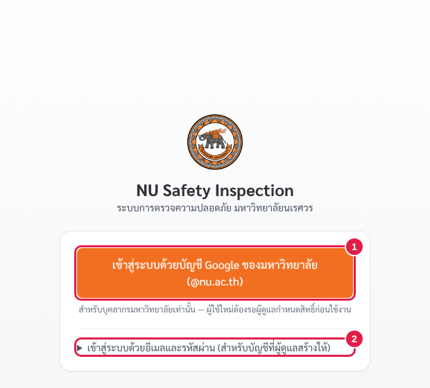
- ปุ่มเข้าสู่ระบบด้วยบัญชี Google ของมหาวิทยาลัย — วิธีหลักสำหรับบุคลากรทุกคน ใช้รหัสผ่านเดียวกับ NU Mail ระบบไม่เก็บรหัสผ่านของท่าน
- เข้าสู่ระบบด้วยอีเมลและรหัสผ่าน — ใช้เฉพาะบัญชีพิเศษที่ผู้ดูแลระบบสร้างรหัสผ่านให้เท่านั้น ห้ามกรอกรหัสผ่าน NU Mail ในช่องนี้
เข้าสู่ระบบครั้งแรก — “ยังไม่ได้รับบทบาท”
การเข้าสู่ระบบครั้งแรกจะสร้างบัญชีให้อัตโนมัติ แต่บัญชีใหม่ ยังไม่มีบทบาท จึงยังไม่เห็นข้อมูลใด ระบบแจ้งผู้ดูแลส่วนกลางให้ทราบแล้ว ให้แจ้งผู้ดูแลระบบหรือผู้ดูแลหน่วยงานของท่านว่า “ต้องการบทบาทอะไร ที่หน่วยงานใด” เมื่อผู้ดูแลกำหนดให้แล้ว ให้กดรีเฟรชหน้า (หรือออกจากระบบแล้วเข้าใหม่)
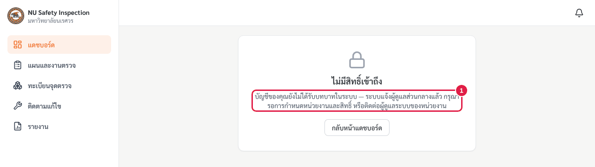
- ข้อความแจ้งว่าบัญชียังไม่ได้รับบทบาท — ไม่ใช่ข้อผิดพลาด รอผู้ดูแลกำหนดสิทธิ์ (ผู้ดูแลทำตามหัวข้อ 7.4)
1.6 หน้าจอหลักบนคอมพิวเตอร์
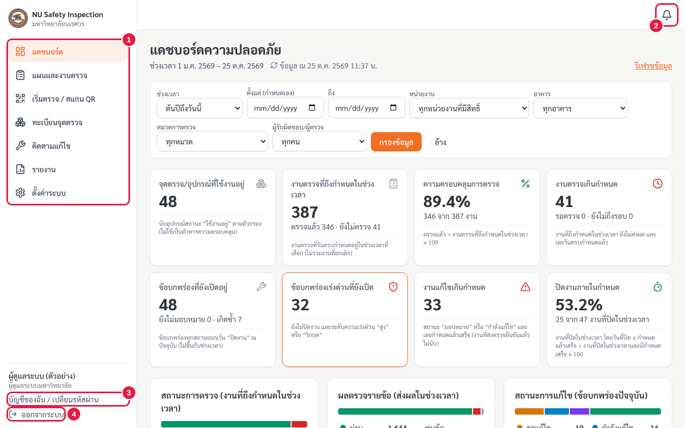
- เมนูหลัก — แดชบอร์ด · แผนและงานตรวจ · เริ่มตรวจ/สแกน QR · ทะเบียนจุดตรวจ · ติดตามแก้ไข · รายงาน · ตั้งค่าระบบ (เมนูที่เห็นขึ้นกับบทบาท) เมนูที่เปิดอยู่จะเป็นสีส้ม
- กระดิ่งแจ้งเตือน — ตัวเลขสีแดงคือจำนวนการแจ้งเตือนที่ยังไม่อ่าน กดเพื่อดูรายการ เช่น “ได้รับมอบหมายงานแก้ไข”
- ชื่อผู้ใช้และบัญชีของฉัน — แสดงชื่อและบทบาทของท่าน กดเพื่อดูข้อมูลบัญชี
- ออกจากระบบ — กดทุกครั้งเมื่อใช้เครื่องคอมพิวเตอร์ส่วนกลาง
1.7 หน้าจอบนโทรศัพท์มือถือ และการติดตั้งเป็นแอป
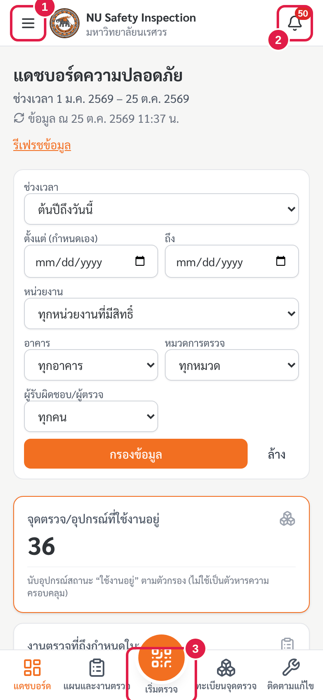
- ปุ่มเมนู (☰) — เปิดเมนูทั้งหมด รวมถึงบัญชีของฉันและออกจากระบบ
- กระดิ่งแจ้งเตือน
- ปุ่มเริ่มตรวจ (ปุ่มกลมสีส้มตรงกลาง) — ทางลัดไปหน้าสแกน QR ใช้บ่อยที่สุดสำหรับผู้ตรวจ
แถบด้านล่างคือ เมนูลัด กดสลับหน้าได้ด้วยนิ้วโป้งเดียว
ติดตั้งเป็นแอปบนหน้าจอโทรศัพท์ (แนะนำ)
Android (Chrome): เปิดระบบ → กดเมนู ⋮ มุมขวาบน → เพิ่มลงในหน้าจอหลัก หรือ ติดตั้งแอป → ติดตั้ง
iPhone/iPad (ต้องใช้ Safari): กดปุ่มแชร์ ⬆ ด้านล่าง → เลื่อนลง → เพิ่มไปยังหน้าจอโฮม → เพิ่ม
จะมีไอคอนตรามหาวิทยาลัยบนหน้าจอ แตะแล้วเปิดเต็มจอเหมือนแอปทั่วไป ไม่ต้องดาวน์โหลดจาก App Store/Play Store
1.8 การแจ้งเตือน
ระบบแจ้งเตือนเมื่อมีงานที่เกี่ยวข้องกับท่าน เช่น ได้รับมอบหมายงานตรวจ งานใกล้ครบกำหนด งานเกินกำหนด มีผลแก้ไขรอตรวจยืนยัน หรือถูกส่งกลับแก้ไข การแจ้งเตือนแสดงในระบบ (กระดิ่ง) เสมอ และส่งทางอีเมลด้วยเมื่อผู้ดูแลตั้งค่าระบบส่งอีเมลแล้ว ระบบตรวจงานใกล้ครบกำหนด/เกินกำหนดวันละครั้ง เวลาประมาณ 08.00 น. และป้องกันการแจ้งซ้ำ (1 เหตุการณ์ แจ้ง 1 ครั้งต่อคน)
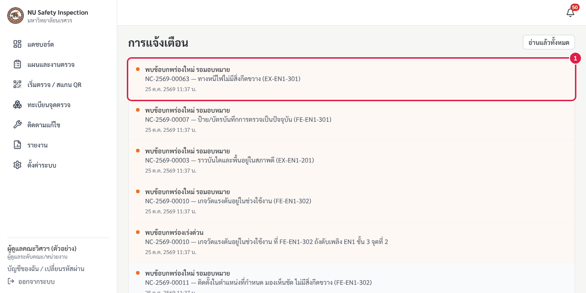
การใช้งานสำหรับผู้ตรวจ
ตรวจด้วยโทรศัพท์มือถือ: สแกน QR → กดผลทีละข้อ → ถ่ายภาพ → ส่งผลตรวจ
ผู้ตรวจใช้งานบนโทรศัพท์มือถือเป็นหลัก ก่อนออกตรวจควรตรวจสอบว่า (1) โทรศัพท์มีอินเทอร์เน็ต (2) เข้าสู่ระบบไว้แล้ว และ (3) อนุญาตให้เบราว์เซอร์ใช้กล้อง ตัวอย่างในส่วนนี้คือการตรวจถังดับเพลิง FE-EN1-202 ซึ่งพบว่า เข็มเกจวัดแรงดันอยู่ในแถบสีแดง
2.1 เลือกจุดที่จะตรวจ
กดปุ่ม เริ่มตรวจ (ปุ่มกลมสีส้มด้านล่าง) จะพบหน้า “เริ่มตรวจ / สแกน QR” ซึ่งเลือกจุดตรวจได้ 3 วิธี
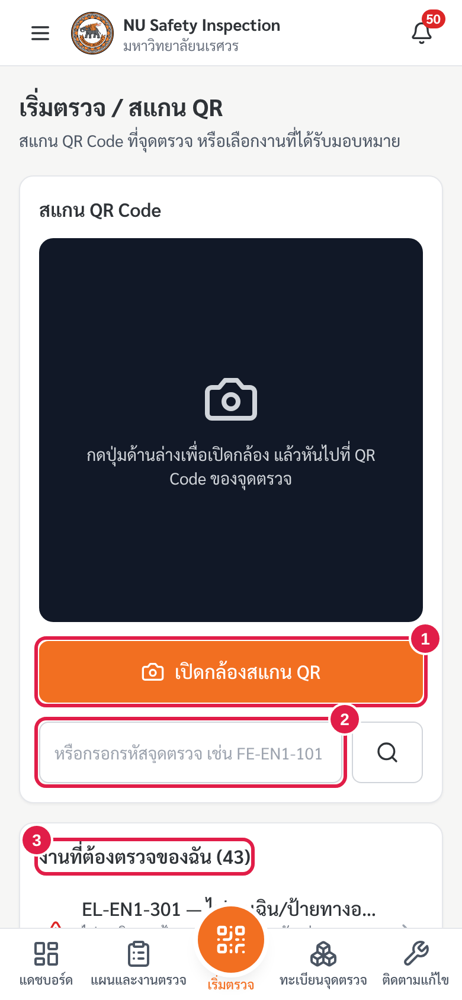
- เปิดกล้องสแกน QR — กดแล้วหันกล้องไปที่ป้าย QR ของอุปกรณ์ ระบบเปิดหน้าจุดตรวจให้เอง ครั้งแรกเบราว์เซอร์จะถามสิทธิ์ใช้กล้อง ให้กด อนุญาต
- พิมพ์รหัสจุดตรวจ — ใช้เมื่อกล้องเปิดไม่ได้หรือป้าย QR ชำรุด ให้พิมพ์รหัสที่อยู่ใต้ QR เช่น
FE-EN1-101แล้วกดปุ่มแว่นขยาย - งานที่ต้องตรวจของฉัน — รายการงานที่ได้รับมอบหมาย เรียงตามวันครบกำหนด แตะรายการเพื่อเริ่มตรวจได้ทันที
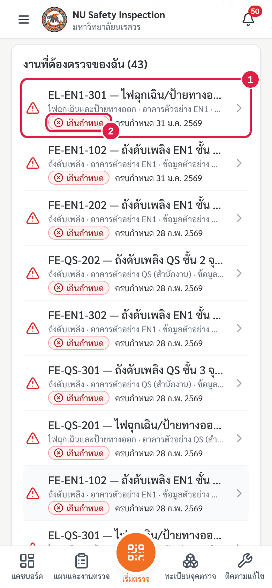
- งานตรวจ 1 รายการ — แสดงรหัสและชื่อจุดตรวจ หมวด อาคาร และตำแหน่ง
- สถานะและวันครบกำหนด — เกินกำหนด คือเลยวันครบกำหนดแล้ว ควรตรวจก่อน · รอตรวจ คืออยู่ในช่วงที่ต้องตรวจ
2.2 หน้าจุดตรวจ (หลังสแกน QR)
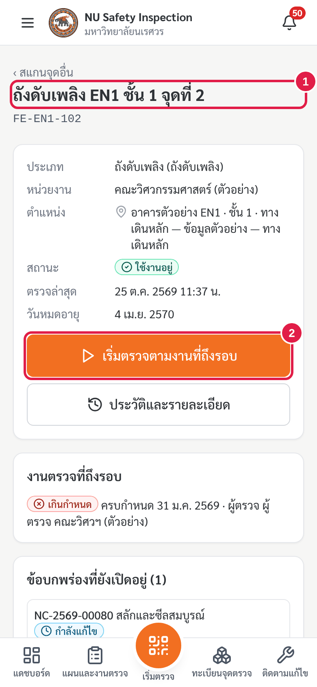
- ชื่อและรหัสจุดตรวจ — ตรวจสอบว่าตรงกับอุปกรณ์ที่อยู่ตรงหน้า (ดูรหัสบนป้าย)
- เริ่มตรวจตามงานที่ถึงรอบ — กดเพื่อเปิดแบบฟอร์มตรวจ ถ้าไม่มีงานถึงรอบ ปุ่มจะเป็น “เริ่มตรวจ (นอกรอบ)” ใช้กรณีตรวจเพิ่มเติม เช่น หลังเกิดเหตุ
ด้านล่างแสดง งานตรวจที่ถึงรอบ และ ข้อบกพร่องที่ยังเปิดอยู่ ของจุดนี้ ช่วยให้รู้ว่าเคยพบปัญหาอะไรค้างอยู่
2.3 บันทึกผลรายข้อ
แบบฟอร์มตรวจแสดงหัวข้อทีละข้อ แต่ละข้อบอก เกณฑ์ (สิ่งที่ถือว่าผ่าน) วิธีตรวจ และ ความสำคัญ ให้กดปุ่มใหญ่ 1 ใน 3 ปุ่มของทุกข้อ
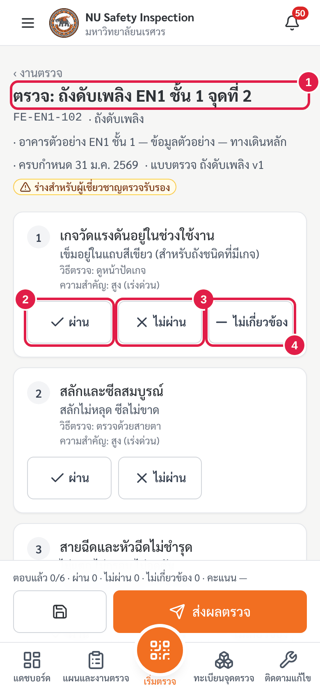
- ชื่อจุดตรวจ พร้อมรหัส ตำแหน่ง วันครบกำหนด และแบบตรวจที่ใช้
- ✓ ผ่าน — เป็นไปตามเกณฑ์
- ✕ ไม่ผ่าน — ไม่เป็นไปตามเกณฑ์ ระบบจะให้กรอกรายละเอียดเพิ่ม (หัวข้อ 2.4)
- — ไม่เกี่ยวข้อง — หัวข้อนี้ใช้กับอุปกรณ์ชิ้นนี้ไม่ได้ ต้องระบุเหตุผล (หัวข้อ 2.5) บางข้อไม่มีปุ่มนี้เพราะต้องตอบผ่าน/ไม่ผ่านเท่านั้น
2.4 เมื่อพบข้อบกพร่อง (กด “ไม่ผ่าน”)
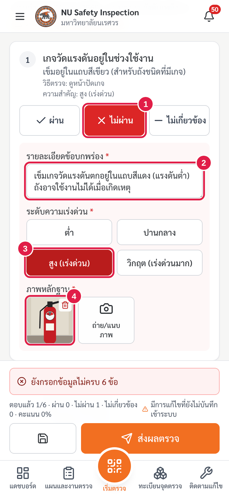
- กด ไม่ผ่าน ปุ่มจะเป็นสีแดง และมีช่องให้กรอกเพิ่มเติม
- รายละเอียดข้อบกพร่อง (บังคับ) — เขียนให้คนที่ไม่ได้อยู่หน้างานเข้าใจ: พบอะไร ที่ไหน เสี่ยงอย่างไร เช่น “เข็มเกจวัดแรงดันตกอยู่ในแถบสีแดง ถังอาจใช้งานไม่ได้เมื่อเกิดเหตุ”
- ระดับความเร่งด่วน (บังคับ) — ต่ำ / ปานกลาง / สูง (เร่งด่วน) / วิกฤต (เร่งด่วนมาก) ระดับ สูงและวิกฤต ระบบแจ้งผู้ดูแลทันทีหลังส่งผล (ดูภาคผนวก ข)
- ภาพหลักฐาน — กด “ถ่าย/แนบภาพ” กล้องหลังจะเปิดให้ถ่าย หรือเลือกภาพจากเครื่อง ระบบย่อขนาดภาพให้อัตโนมัติ แนบได้หลายภาพ กดรูปถังขยะบนภาพเพื่อลบ
2.5 ข้อที่ไม่เกี่ยวข้อง
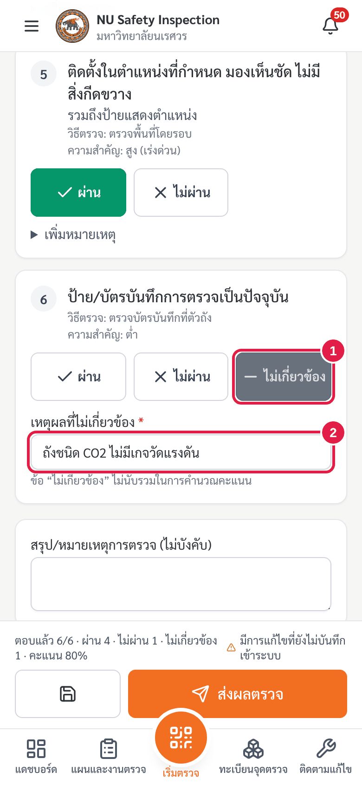
- กด ไม่เกี่ยวข้อง
- เหตุผลที่ไม่เกี่ยวข้อง (บังคับ) — เช่น “ถังชนิด CO2 ไม่มีเกจวัดแรงดัน”
ข้อ “ไม่เกี่ยวข้อง” ไม่ถูกนำไปคิดคะแนน ตัวอย่าง: ตรวจ 6 ข้อ ผ่าน 4 ไม่ผ่าน 1 ไม่เกี่ยวข้อง 1 → คะแนน = 4 ÷ (4+1) × 100 = 80%
ถ้าต้องการบันทึกข้อสังเกตในข้อที่ผ่าน ให้กด เพิ่มหมายเหตุ ใต้ข้อนั้น
2.6 บันทึกร่าง และการใช้งานเมื่อสัญญาณไม่ดี
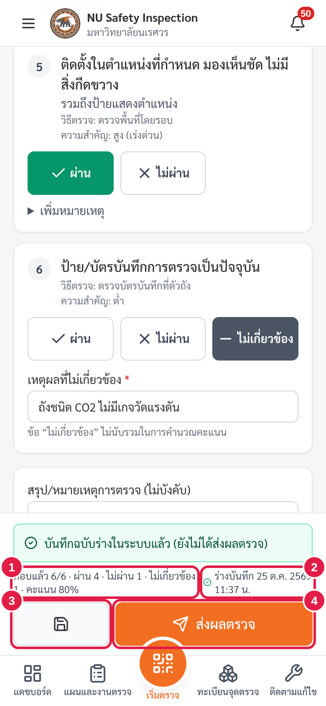
- ความคืบหน้า — ตอบแล้วกี่ข้อจากทั้งหมด จำนวนผ่าน/ไม่ผ่าน/ไม่เกี่ยวข้อง และคะแนน
- สถานะฉบับร่าง — “ร่างบันทึก (เวลา)” แปลว่าบันทึกเข้าระบบแล้ว · “มีการแก้ไขที่ยังไม่บันทึกเข้าระบบ” แปลว่ามีข้อมูลที่ยังอยู่ในเครื่องเท่านั้น
- ปุ่มบันทึกร่าง (รูปแผ่นดิสก์) — กดเพื่อบันทึกทันที (ระบบบันทึกร่างอัตโนมัติทุก 20 วินาทีเมื่อออนไลน์อยู่แล้ว)
- ส่งผลตรวจ — กดเมื่อตอบครบทุกข้อ
- ทุกครั้งที่กรอก ระบบเก็บสำเนาไว้ ในเครื่อง ด้วย ถ้าปิดหน้าไปแล้วเปิดใหม่ในเครื่องเดิม ข้อมูลจะกลับมา
- ถ้าเห็นแถบแดง “ไม่มีการเชื่อมต่อเครือข่าย” ข้อมูลยัง ไม่ถูกส่ง ให้ไปที่จุดที่มีสัญญาณแล้วกดส่ง
- ระบบ ยังไม่รองรับการส่งผลแบบออฟไลน์ และต้องอัปโหลดภาพขณะออนไลน์
2.7 ส่งผลตรวจ และการยืนยันจากระบบ
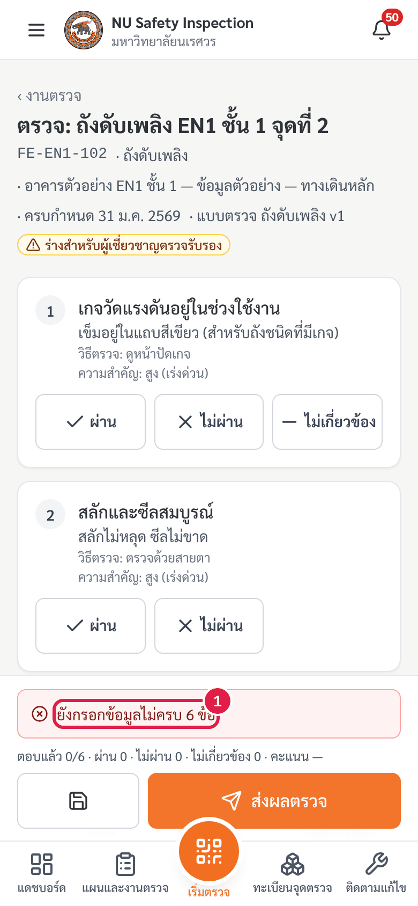
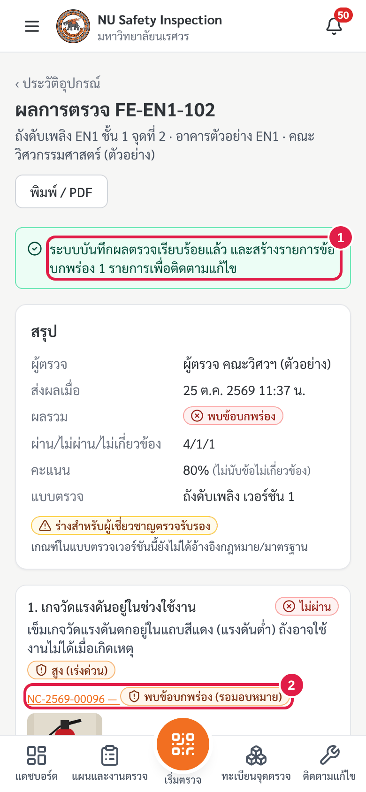
- กด ส่งผลตรวจ ถ้ายังกรอกไม่ครบ ระบบแสดงกล่องแดง “ยังกรอกข้อมูลไม่ครบ … ข้อ” (ภาพซ้าย หมายเลข 1) และเลื่อนไปยังข้อที่ต้องแก้ พร้อมบอกสาเหตุใต้ข้อนั้น
- เมื่อครบแล้ว ระหว่างส่งจะเห็นข้อความ “กำลังส่งผลตรวจ… กรุณารอการยืนยันจากระบบ” อย่าปิดหน้าจอ
- การส่งสำเร็จจริงเมื่อเห็นข้อความสีเขียว “ระบบบันทึกผลตรวจเรียบร้อยแล้ว” (ภาพขวา หมายเลข 1) พร้อมจำนวนข้อบกพร่องที่สร้าง
- ข้อที่ไม่ผ่านจะได้ เลขที่ข้อบกพร่อง เช่น
NC-2569-00083(ภาพขวา หมายเลข 2) กดเพื่อติดตามสถานะได้
การใช้งานสำหรับผู้ดูแลคณะ/หน่วยงาน
และผู้ประสานงานส่วนกลาง
ทะเบียนจุดตรวจ · ป้าย QR · แผนการตรวจ · มอบหมายงาน · มอบหมายผู้แก้ไข · ใบงาน
ผู้ดูแลคณะ/หน่วยงานทำงานในขอบเขตหน่วยงานของตนและหน่วยงานย่อย ส่วนผู้ประสานงานส่วนกลางทำได้ทุกหน่วยงาน ลำดับงานที่แนะนำเมื่อเริ่มใช้ระบบ คือ เพิ่มจุดตรวจ → พิมพ์และติดป้าย QR → สร้างแผนการตรวจ → มอบหมายผู้ตรวจ จากนั้นจึงติดตามข้อบกพร่องเป็นประจำ
3.1 ทะเบียนจุดตรวจ
เมนู ทะเบียนจุดตรวจ แสดงอุปกรณ์ทั้งหมดในขอบเขตสิทธิ์ของท่าน พร้อมวันตรวจล่าสุด กำหนดตรวจครั้งถัดไป วันหมดอายุ และสถานะ
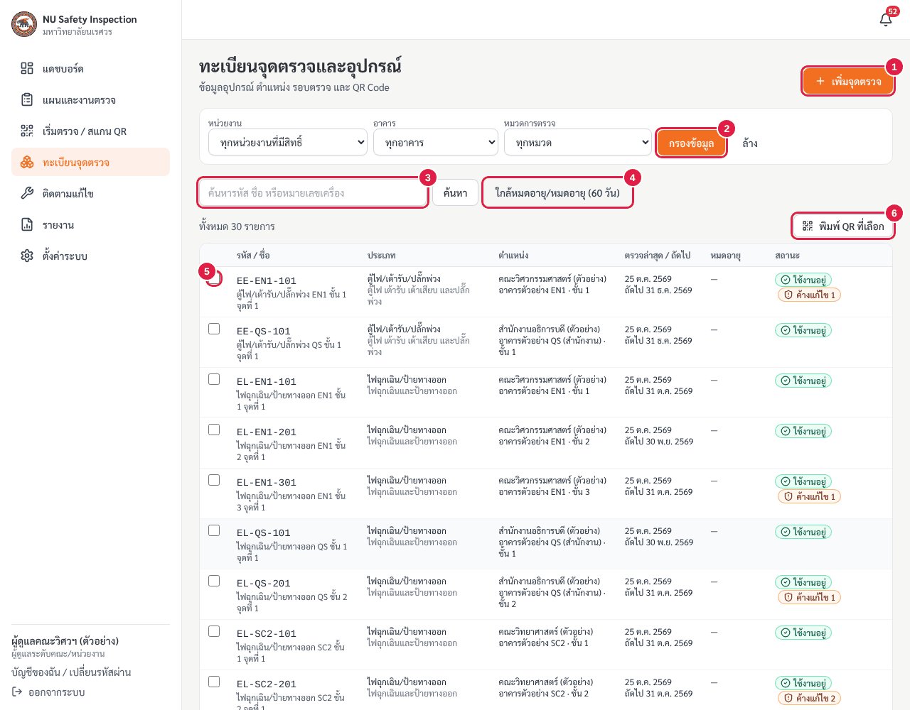
- เพิ่มจุดตรวจ — ลงทะเบียนอุปกรณ์ใหม่ (หัวข้อ 3.2)
- ตัวกรอง — เลือกหน่วยงาน อาคาร หมวดการตรวจ แล้วกด “กรองข้อมูล” (กด “ล้าง” เพื่อดูทั้งหมด)
- ค้นหา — พิมพ์รหัส ชื่อ หรือหมายเลขเครื่อง
- ใกล้หมดอายุ/หมดอายุ (60 วัน) — แสดงเฉพาะอุปกรณ์ที่ใกล้หมดอายุ เช่น ถังดับเพลิงที่ต้องเปลี่ยน ควรเปิดดูทุกเดือน
- ช่องเลือก — ติ๊กเลือกหลายรายการ
- พิมพ์ QR ที่เลือก — พิมพ์ป้าย QR ของรายการที่ติ๊กไว้ทั้งหมดในครั้งเดียว
3.2 เพิ่มจุดตรวจใหม่
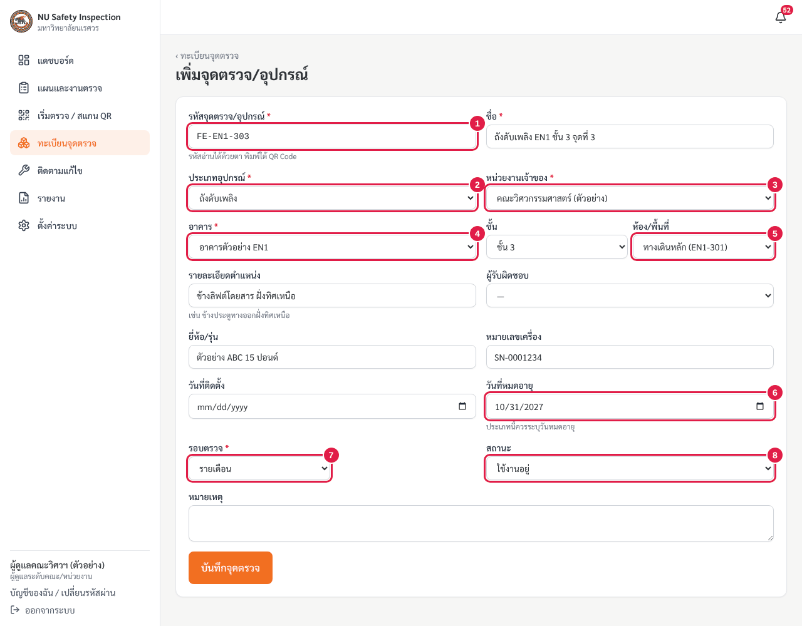
- รหัสจุดตรวจ (บังคับ) — รหัสที่คนอ่านเข้าใจและไม่ซ้ำกัน แนะนำรูปแบบ
ประเภท-อาคาร-ชั้นและลำดับเช่นFE-EN1-303= ถังดับเพลิง อาคาร EN1 ชั้น 3 จุดที่ 3 - ประเภทอุปกรณ์ (บังคับ) — ใช้เลือกแบบตรวจที่เหมาะสม
- หน่วยงานเจ้าของ (บังคับ) — หน่วยงานที่รับผิดชอบอุปกรณ์
- อาคาร (บังคับ) แล้วเลือก ชั้น — รายการชั้นจะเปลี่ยนตามอาคาร
- ห้อง/พื้นที่ และ รายละเอียดตำแหน่ง — ช่วยให้ผู้ตรวจหาอุปกรณ์เจอ เช่น “ข้างลิฟต์โดยสาร ฝั่งทิศเหนือ”
- วันที่หมดอายุ — สำหรับถังดับเพลิงหรืออุปกรณ์ที่มีอายุใช้งาน ระบบจะเตือนก่อนหมดอายุ
- รอบตรวจ (บังคับ) — รายวัน/สัปดาห์/เดือน/ไตรมาส/ปี หรือกำหนดเอง (ทุก N วัน)
- สถานะ — ใช้งานอยู่ / หยุดใช้งาน / ย้ายตำแหน่ง / จำหน่ายแล้ว (ตรวจได้เฉพาะ “ใช้งานอยู่”)
กรอกเสร็จกด บันทึกจุดตรวจ ระบบสร้าง QR Code ให้อัตโนมัติ
3.3 รายละเอียดจุดตรวจและการพิมพ์ป้าย QR
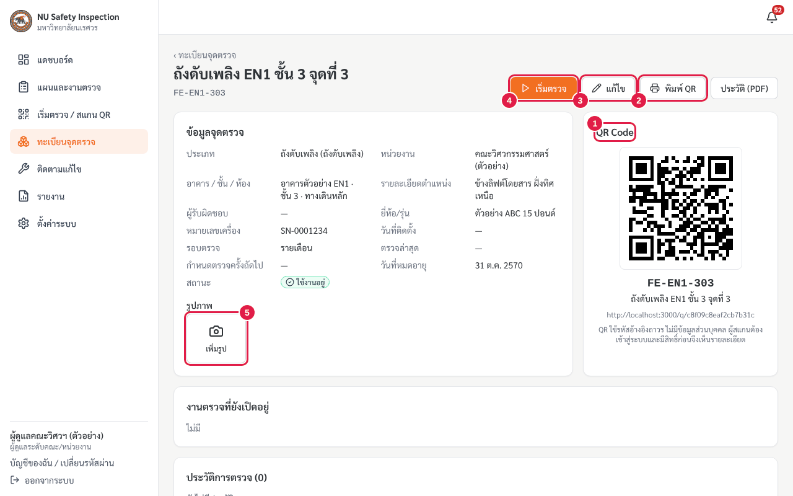
- QR Code ของจุดตรวจ พร้อมรหัสที่อ่านด้วยตา
- พิมพ์ QR — เปิดหน้าพิมพ์ป้ายของจุดนี้
- แก้ไข — แก้ข้อมูลจุดตรวจ เช่น ย้ายตำแหน่ง เปลี่ยนสถานะ
- เริ่มตรวจ — ตรวจจากหน้านี้ได้ทันที (ถ้ามีบทบาทผู้ตรวจ)
- เพิ่มรูป — แนบภาพอุปกรณ์เพื่อให้ผู้ตรวจจำได้ง่าย
ด้านล่างของหน้ามี งานตรวจที่ยังเปิดอยู่ ประวัติการตรวจ และ ข้อบกพร่อง ของจุดนี้ ปุ่ม “ประวัติ (PDF)” ใช้พิมพ์ประวัติอุปกรณ์
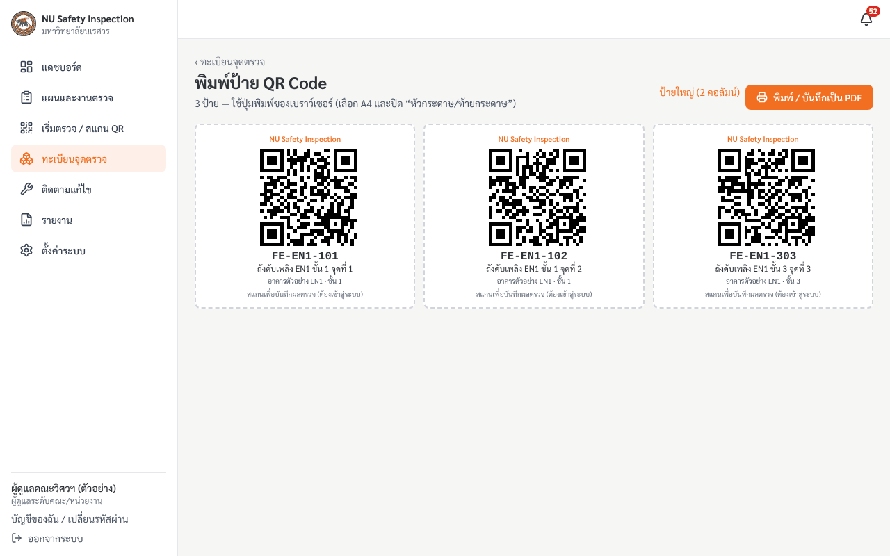
วิธีพิมพ์ป้าย QR
- กด พิมพ์ / บันทึกเป็น PDF หน้าต่างพิมพ์ของเบราว์เซอร์จะเปิดขึ้น
- เลือกขนาดกระดาษ A4 และ ปิด ตัวเลือก “หัวกระดาษและท้ายกระดาษ (Headers and footers)”
- เลือกเครื่องพิมพ์ หรือ “บันทึกเป็น PDF” เพื่อส่งให้ร้านพิมพ์สติกเกอร์
- กดลิงก์ “ป้ายใหญ่ (2 คอลัมน์)” ถ้าต้องการป้ายขนาดใหญ่ขึ้น
- ติดในตำแหน่งที่สแกนได้สะดวก ไม่บังข้อมูลบนอุปกรณ์ และไม่โดนแดด/ฝนโดยตรง (แนะนำสติกเกอร์กันน้ำหรือเคลือบพลาสติก)
- ป้ายมีเพียงรหัสอ้างอิงแบบสุ่ม ไม่มีข้อมูลส่วนบุคคล คนทั่วไปที่สแกนต้องเข้าสู่ระบบและมีสิทธิ์จึงจะเห็นรายละเอียด
- ป้ายชำรุดหรือหาย พิมพ์ใหม่ได้จากหน้ารายละเอียดจุดตรวจ ใช้รหัสเดิมได้เลย
3.4 สร้างแผนการตรวจ
แผนการตรวจบอกระบบว่า “อุปกรณ์กลุ่มไหน ต้องตรวจด้วยแบบตรวจอะไร บ่อยแค่ไหน” เมื่อบันทึกแผน ระบบจะสร้างงานตรวจถึงสิ้นปีให้อุปกรณ์ทุกชิ้นที่ตรงเงื่อนไขทันที ไปที่เมนู แผนและงานตรวจ → ปุ่ม จัดการแผนการตรวจ
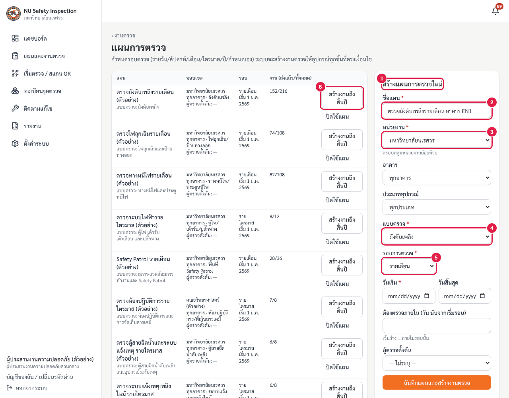
- สร้างแผนการตรวจใหม่ — แบบฟอร์มด้านขวา
- ชื่อแผน — ตั้งให้สื่อความหมาย เช่น “ตรวจถังดับเพลิงรายเดือน อาคาร EN1”
- หน่วยงาน (ครอบคลุมหน่วยงานย่อยด้วย) แล้วเลือก อาคาร และ ประเภทอุปกรณ์ ถ้าไม่เลือก = ทุกอาคาร/ทุกประเภท
- แบบตรวจ — แบบตรวจที่ใช้กับอุปกรณ์ในแผนนี้
- รอบการตรวจ — แล้วกำหนด วันเริ่ม (วันสิ้นสุดเว้นว่างได้) “ต้องตรวจภายใน (วัน)” และ “ผู้ตรวจตั้งต้น” (ถ้ามี) จากนั้นกด บันทึกแผนและสร้างงานตรวจ
- สร้างงานถึงสิ้นปี — กดเมื่อเพิ่มอุปกรณ์ใหม่ภายหลัง ระบบจะสร้างงานให้อุปกรณ์ใหม่โดยไม่สร้างงานซ้ำ · “ปิดใช้แผน” เมื่อเลิกใช้แผนนั้น
3.5 มอบหมายงานตรวจให้ผู้ตรวจ
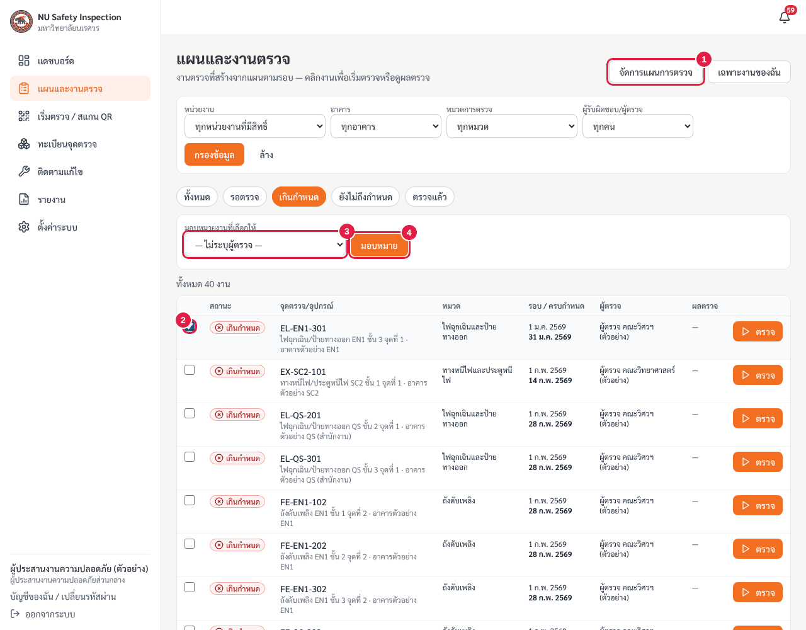
- จัดการแผนการตรวจ — ไปหน้าแผน (หัวข้อ 3.4) · ปุ่ม “เฉพาะงานของฉัน” แสดงเฉพาะงานที่ท่านเป็นผู้ตรวจ
- ติ๊กเลือกงาน ที่ต้องการมอบหมาย (เลือกได้หลายงาน) ใช้แถบ ทั้งหมด/รอตรวจ/เกินกำหนด/ยังไม่ถึงกำหนด/ตรวจแล้ว เพื่อกรองรายการ
- มอบหมายงานที่เลือกให้ — เลือกชื่อผู้ตรวจ
- กด มอบหมาย — ผู้ตรวจจะได้รับแจ้งเตือนเมื่องานถึงรอบภายใน 7 วัน
3.6 มอบหมายผู้รับผิดชอบแก้ไขข้อบกพร่อง
เมื่อผู้ตรวจส่งผลที่มีข้อไม่ผ่าน ผู้ดูแลหน่วยงานจะได้รับแจ้งเตือน “พบข้อบกพร่องใหม่ รอมอบหมาย” เปิดเมนู ติดตามแก้ไข → แถบ รอมอบหมาย แล้วกดรายการ
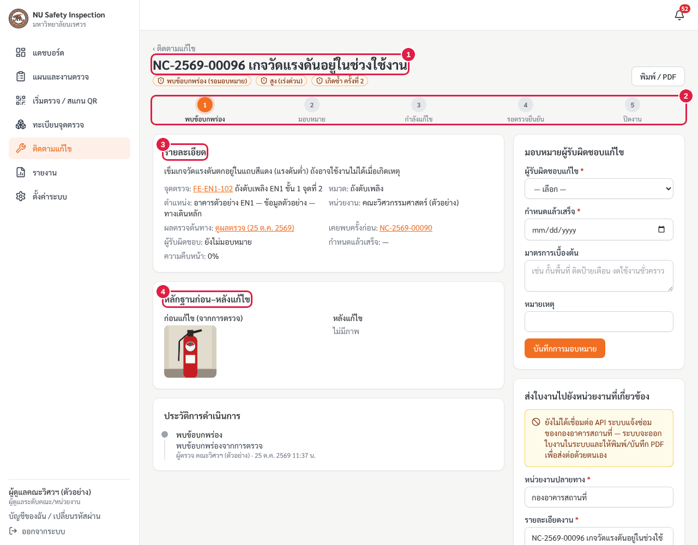
- เลขที่และชื่อข้อบกพร่อง พร้อมสถานะและระดับความเร่งด่วน
- แถบลำดับสถานะ 5 ขั้น — วงกลมสีส้มคือขั้นปัจจุบัน
- รายละเอียด — สิ่งที่พบ จุดตรวจ ตำแหน่ง ลิงก์ไปผลตรวจต้นทาง และ “เคยพบครั้งก่อน” ถ้าเป็นปัญหาเกิดซ้ำ
- หลักฐานก่อน–หลังแก้ไข — ภาพจากผู้ตรวจ กดที่ภาพเพื่อดูขนาดใหญ่
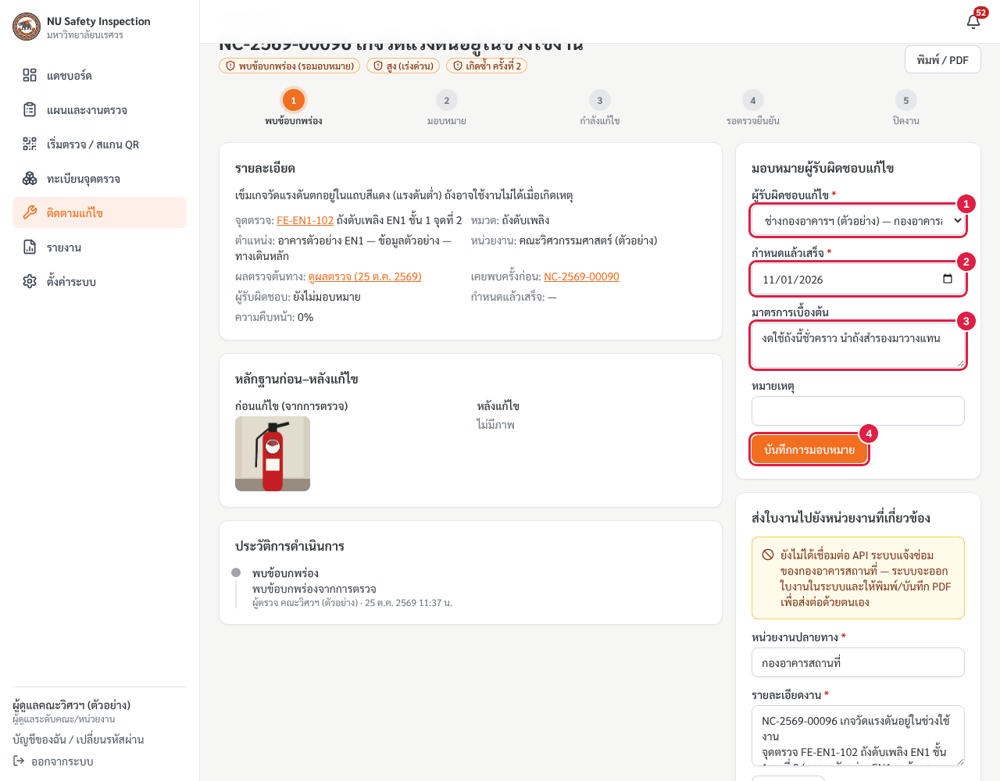
- ผู้รับผิดชอบแก้ไข — เลือกช่างหรือผู้รับผิดชอบ (มอบหมายข้ามหน่วยงานได้ เช่น ช่างกองอาคารสถานที่)
- กำหนดแล้วเสร็จ — วันที่ต้องแก้ไขเสร็จ ระบบเตือนก่อนครบกำหนดและเมื่อเกินกำหนด
- มาตรการเบื้องต้น — สิ่งที่ทำไปก่อนเพื่อลดความเสี่ยง เช่น “งดใช้ถังนี้ชั่วคราว นำถังสำรองมาวางแทน”
- กด บันทึกการมอบหมาย — สถานะเปลี่ยนเป็น “มอบหมายแล้ว (รอแก้ไข)” และผู้รับผิดชอบได้รับแจ้งเตือน
ถ้าต้องเปลี่ยนผู้รับผิดชอบหรือเลื่อนกำหนด ให้ใช้กล่อง “เปลี่ยนผู้รับผิดชอบ / กำหนดเสร็จ” ในหน้าเดียวกัน
3.7 ออกใบงานถึงหน่วยงานอื่น
ถ้างานแก้ไขต้องให้หน่วยงานอื่นดำเนินการ เช่น กองอาคารสถานที่ ให้ออก ใบงาน จากกล่อง “ส่งใบงานไปยังหน่วยงานที่เกี่ยวข้อง” ในหน้าข้อบกพร่อง
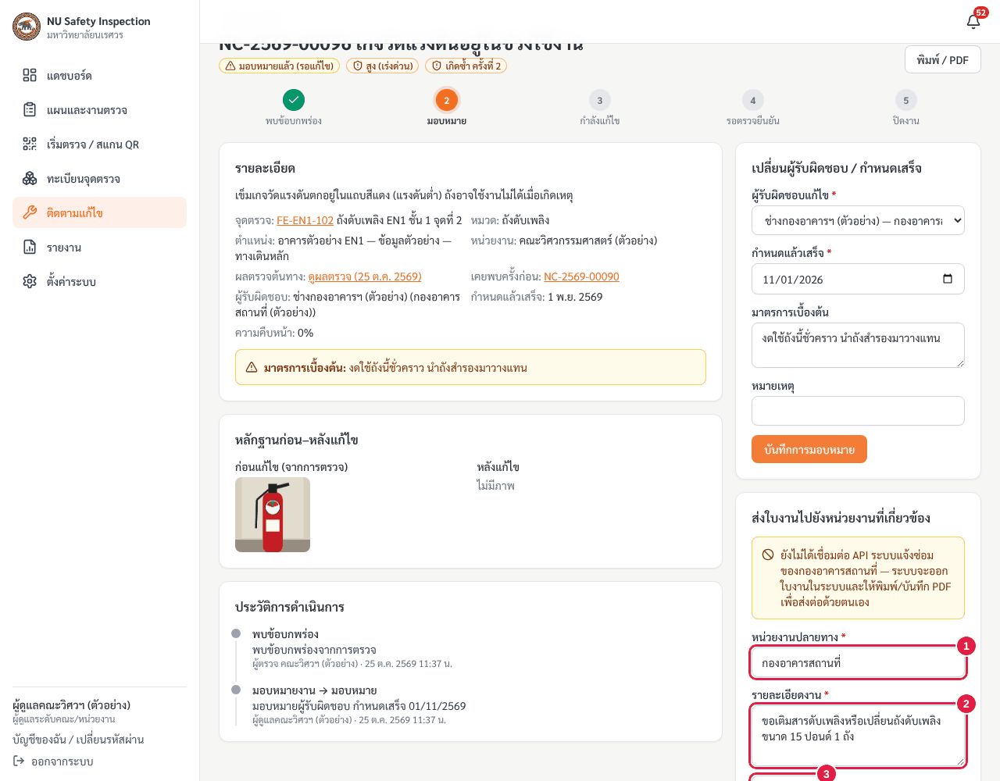
- หน่วยงานปลายทาง — ค่าเริ่มต้นคือกองอาคารสถานที่ แก้ได้
- รายละเอียดงาน — ระบบเติมข้อมูลข้อบกพร่องให้ แก้ไขเพิ่มเติมได้ เช่น “ขอเติมสารดับเพลิงหรือเปลี่ยนถังขนาด 15 ปอนด์ 1 ถัง”
- กด ออกใบงาน — ระบบออกเลขที่ใบงาน เช่น
WO-2569-00001
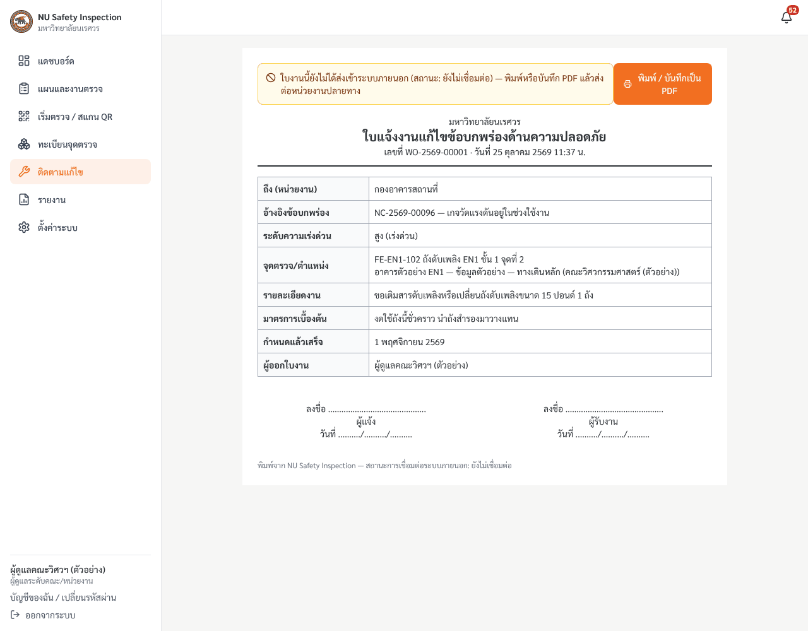
3.8 ติดตามข้อบกพร่องประจำสัปดาห์
เมนู ติดตามแก้ไข มีแถบกรองสำเร็จรูป แนะนำให้เปิดดูอย่างน้อยสัปดาห์ละครั้ง
| แถบ | ใช้ดู |
|---|---|
| ยังไม่ปิด | ข้อบกพร่องทุกรายการที่ยังไม่ปิดงาน |
| รอมอบหมาย | รายการใหม่ที่ต้องเลือกผู้รับผิดชอบ — ควรเป็นศูนย์เสมอ |
| รอแก้ไข / กำลังแก้ไข | งานที่อยู่ระหว่างผู้รับผิดชอบดำเนินการ |
| รอตรวจยืนยัน | งานที่แก้เสร็จแล้ว รอผู้ตรวจยืนยัน |
| เกินกำหนด | งานแก้ไขที่เลยวันกำหนดแล้วเสร็จ — ติดตามผู้รับผิดชอบ |
| เร่งด่วน | ระดับสูงและวิกฤตที่ยังไม่ปิด — ควรตรวจหน้างานและมีมาตรการเบื้องต้น |
| เกิดซ้ำ | ปัญหาเดิมที่จุดเดิม เกิดซ้ำภายใน 365 วัน — ควรหาสาเหตุที่แท้จริง |
| ปิดงานแล้ว / งานของฉัน / ทั้งหมด | ดูย้อนหลัง หรือเฉพาะงานที่ท่านเป็นผู้รับผิดชอบ |
การใช้งานสำหรับผู้รับผิดชอบแก้ไข
รับงาน → รายงานความคืบหน้า → แนบภาพหลังแก้ไข → ส่งให้ตรวจยืนยัน
ผู้รับผิดชอบแก้ไข เช่น ช่างของคณะหรือกองอาคารสถานที่ จะได้รับแจ้งเตือน “ได้รับมอบหมายงานแก้ไข” (และอีเมล หากระบบตั้งค่าส่งอีเมลแล้ว) ใช้งานได้ทั้งบนมือถือและคอมพิวเตอร์ ตัวอย่างนี้ใช้มือถือ
4.1 ดูงานที่ได้รับมอบหมาย และรับงาน
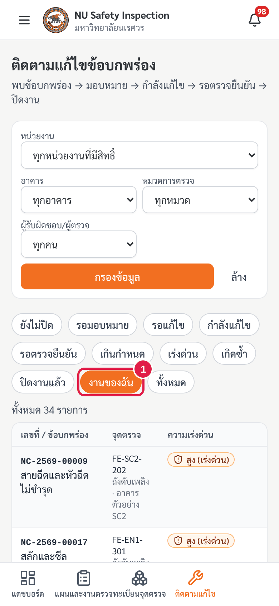
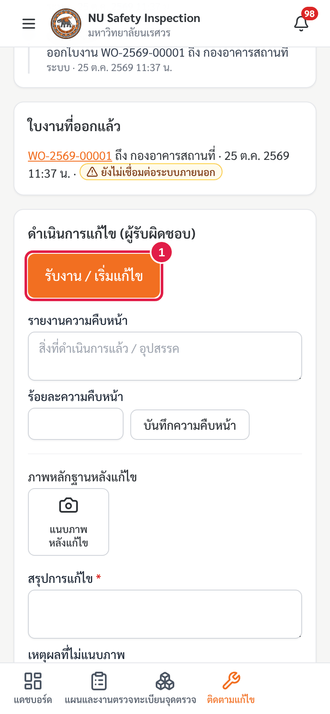
- เมนู ติดตามแก้ไข → แถบ งานของฉัน (ภาพซ้าย หมายเลข 1) หรือกดจากรายการแจ้งเตือน
- เปิดรายการ อ่านรายละเอียด ตำแหน่ง ภาพก่อนแก้ไข มาตรการเบื้องต้น และ กำหนดแล้วเสร็จ
- กด รับงาน / เริ่มแก้ไข (ภาพขวา หมายเลข 1) สถานะเปลี่ยนเป็น “กำลังแก้ไข”
4.2 รายงานความคืบหน้า
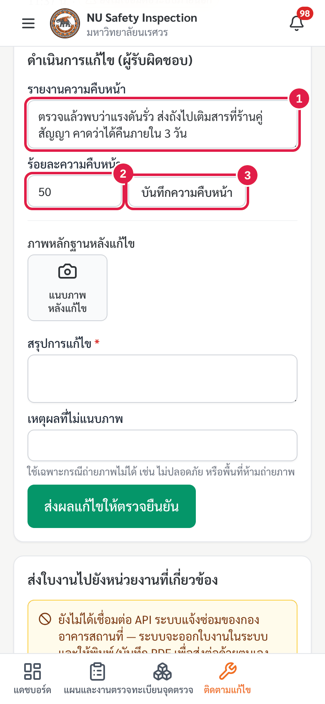
- รายงานความคืบหน้า — สิ่งที่ดำเนินการแล้ว หรืออุปสรรค เช่น “ส่งถังไปเติมสาร คาดว่าได้คืนภายใน 3 วัน”
- ร้อยละความคืบหน้า — ตัวเลข 0–100
- กด บันทึกความคืบหน้า — บันทึกได้หลายครั้ง ผู้ดูแลเห็นในประวัติ
4.3 ส่งผลการแก้ไขให้ตรวจยืนยัน
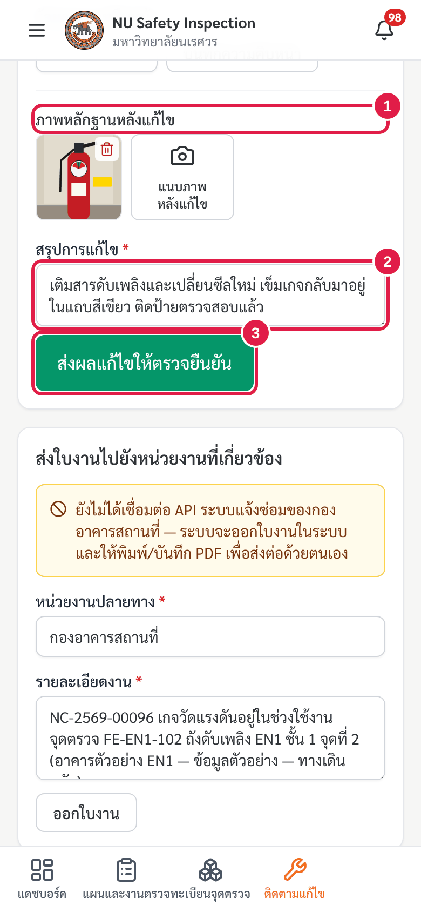
- ภาพหลักฐานหลังแก้ไข — กด “แนบภาพหลังแก้ไข” แล้วถ่ายภาพ ควรถ่าย มุมเดียวกับภาพก่อนแก้ไข เพื่อให้เปรียบเทียบง่าย
- สรุปการแก้ไข (บังคับ) — ทำอะไรไป ผลเป็นอย่างไร
- กด ส่งผลแก้ไขให้ตรวจยืนยัน สถานะเปลี่ยนเป็น “รอตรวจยืนยัน”
ถ้าถ่ายภาพไม่ได้เพราะไม่ปลอดภัยหรือห้ามถ่ายภาพ ให้กรอกช่อง เหตุผลที่ไม่แนบภาพ แทน ถ้าไม่มีทั้งภาพและเหตุผล ระบบจะไม่ให้ส่ง
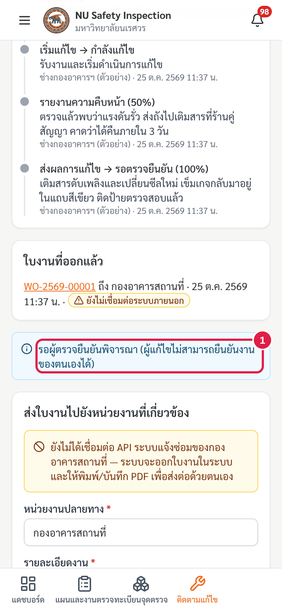
- ข้อความ “ผู้แก้ไขไม่สามารถยืนยันงานของตนเองได้” — ระบบบังคับแยกหน้าที่ ผู้ตรวจยืนยันคนอื่นจะเป็นผู้ตรวจรับงาน
ถ้าถูกส่งกลับแก้ไข
- ท่านจะได้รับแจ้งเตือนพร้อม เหตุผล สถานะกลับเป็น “กำลังแก้ไข” และหน้ารายการแสดง “ส่งกลับแก้ไข 1 ครั้ง”
- แก้ไขตามเหตุผล แล้ว แนบภาพหลังแก้ไขชุดใหม่ (ภาพก่อนถูกส่งกลับไม่นับ) และส่งผลอีกครั้ง
กำหนดเวลา
ระบบเตือนก่อนครบกำหนด (ค่าเริ่มต้น 3 วัน) และเมื่อเกินกำหนด ถ้าเกินกำหนดนาน (ค่าเริ่มต้น 7 วัน) จะยกระดับแจ้งถึงผู้ดูแลหน่วยงานและผู้ประสานงานส่วนกลาง
การใช้งานสำหรับผู้ตรวจยืนยัน
ตรวจรับผลการแก้ไข แล้วเลือก “ผ่าน — ปิดงาน” หรือ “ส่งกลับแก้ไข”
ผู้ตรวจยืนยันคือคนกลางที่ยืนยันว่าแก้ไขจริงก่อนปิดงาน (ผู้ดูแลคณะ/หน่วยงานและผู้ประสานงานส่วนกลางทำหน้าที่นี้ได้ด้วย) ระบบแจ้งเตือน “มีผลการแก้ไขรอตรวจยืนยัน” เมื่อผู้รับผิดชอบส่งผล
5.1 เปิดรายการที่รอตรวจยืนยัน
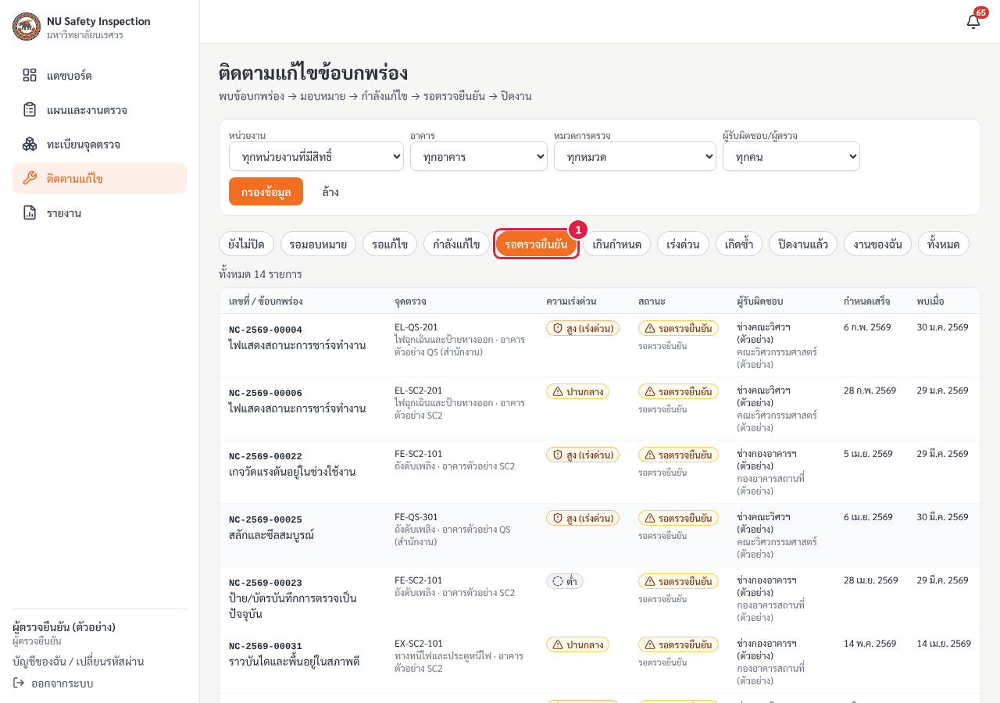
- เมนู ติดตามแก้ไข → แถบ รอตรวจยืนยัน
- กดเลขที่ข้อบกพร่องเพื่อเปิดรายละเอียด
5.2 เปรียบเทียบหลักฐานก่อน–หลัง
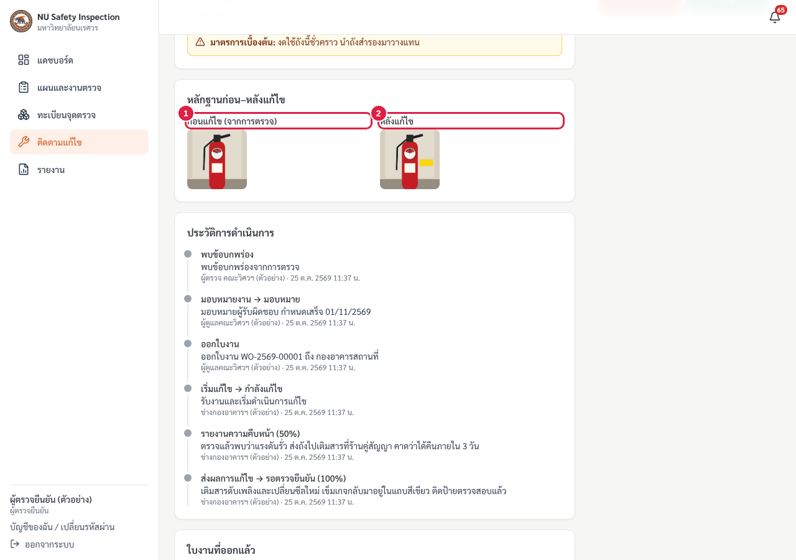
- ก่อนแก้ไข (จากการตรวจ) — ภาพที่ผู้ตรวจถ่ายตอนพบปัญหา
- หลังแก้ไข — ภาพจากผู้รับผิดชอบ กดที่ภาพเพื่อดูขนาดใหญ่
อ่าน ประวัติการดำเนินการ ด้านล่างประกอบ ถ้าเป็นข้อบกพร่องระดับเร่งด่วน ควรไปตรวจหน้างานจริงก่อนยืนยัน
5.3 ผ่าน — ปิดงาน หรือ ส่งกลับแก้ไข
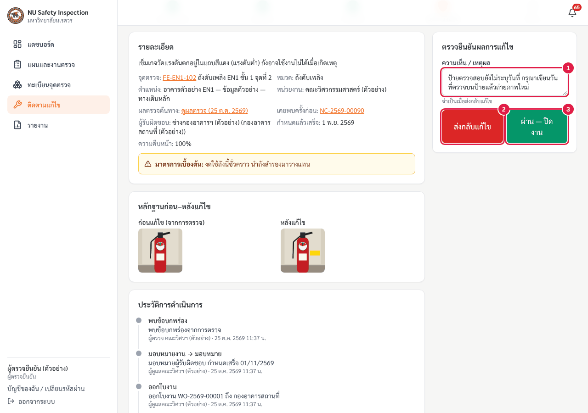
- ความเห็น / เหตุผล — บังคับเมื่อส่งกลับ เขียนให้ชัดว่าต้องแก้อะไรเพิ่ม เช่น “ป้ายตรวจสอบยังไม่ระบุวันที่ กรุณาเขียนวันที่ตรวจบนป้ายแล้วถ่ายภาพใหม่”
- ส่งกลับแก้ไข — งานกลับไปเป็น “กำลังแก้ไข” ผู้รับผิดชอบได้รับแจ้งพร้อมเหตุผล
- ผ่าน — ปิดงาน — ยืนยันว่าแก้ไขเรียบร้อย งานปิดทันที
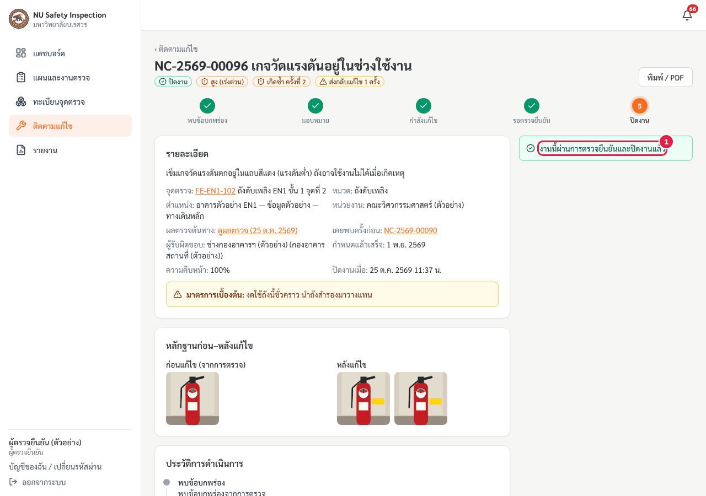
- ข้อความ “งานนี้ผ่านการตรวจยืนยันและปิดงานแล้ว” — แถบสถานะทั้ง 5 ขั้นเป็นเครื่องหมายถูก กดปุ่ม พิมพ์ / PDF ที่หัวหน้าเพื่อพิมพ์รายงานข้อบกพร่องฉบับนี้
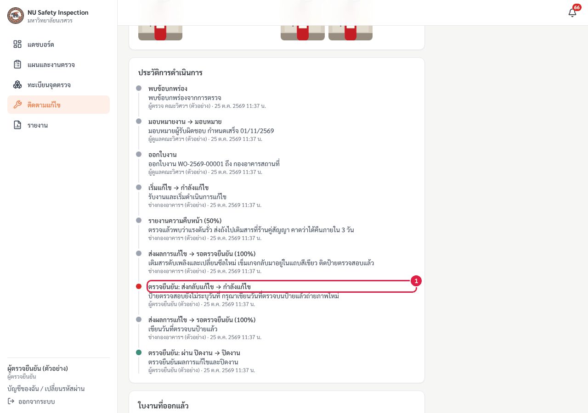
- ครั้งที่ ส่งกลับแก้ไข (จุดสีแดง) พร้อมเหตุผล — ประวัติบันทึกทุกขั้นตอน ใครทำ และเมื่อใด แก้ไขหรือลบไม่ได้
แดชบอร์ดและรายงาน
สำหรับผู้บริหาร คณะกรรมการความปลอดภัย ผู้ประสานงาน และผู้ดูแล
แดชบอร์ดคือหน้าแรกหลังเข้าสู่ระบบ ตัวเลขทุกตัว คำนวณเฉพาะข้อมูลในขอบเขตสิทธิ์ของผู้ดู เช่น ผู้บริหารคณะเห็นเฉพาะข้อมูลคณะตน ส่วนบทบาทผู้บริหารเป็นแบบอ่านอย่างเดียว ไม่มีเมนูตั้งค่าหรือเริ่มตรวจ
6.1 อ่านแดชบอร์ด
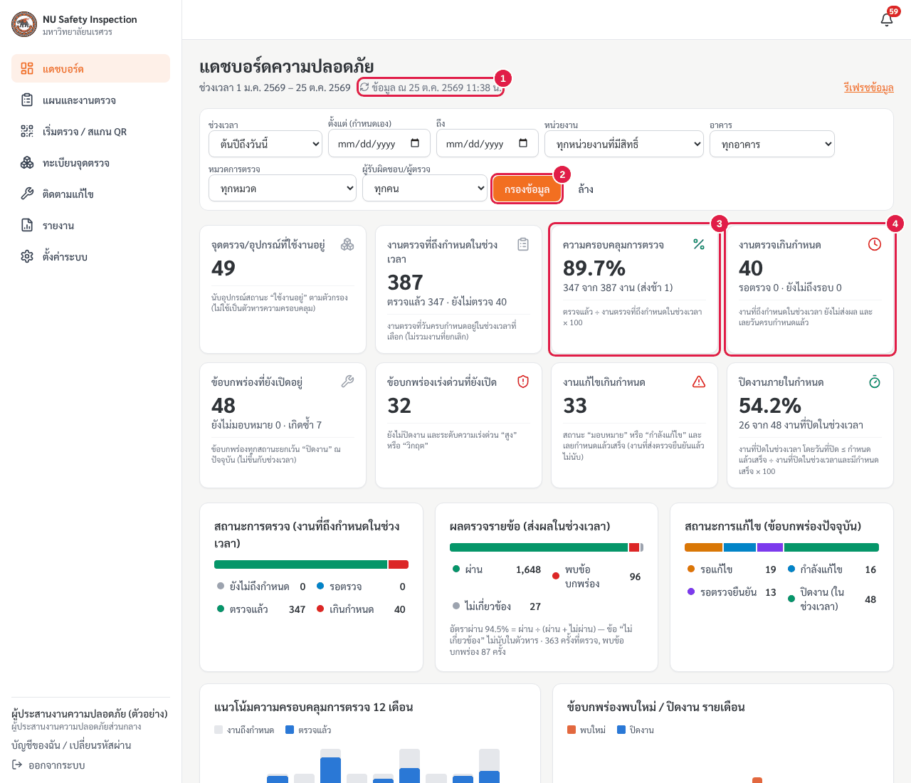
- ข้อมูล ณ — เวลาที่คำนวณตัวเลข (เวลาประเทศไทย) กด “รีเฟรชข้อมูล” เพื่อคำนวณใหม่
- ตัวกรอง — ช่วงเวลา (เช่น ต้นปีถึงวันนี้ ปีงบประมาณ หรือกำหนดเอง) หน่วยงาน อาคาร หมวด ผู้รับผิดชอบ แล้วกด “กรองข้อมูล”
- ความครอบคลุมการตรวจ — ร้อยละของงานตรวจที่ตรวจแล้ว เทียบกับงานที่ถึงกำหนดในช่วงเวลา (สูตรอยู่ใต้ตัวเลขทุกกล่อง)
- งานตรวจเกินกำหนด — กดที่กล่องตัวเลขใดก็ได้ เพื่อเปิดรายการต้นทางของตัวเลขนั้น
| ตัวชี้วัด | ความหมาย | ค่าที่ดี |
|---|---|---|
| จุดตรวจ/อุปกรณ์ที่ใช้งานอยู่ | จำนวนอุปกรณ์สถานะ “ใช้งานอยู่” ณ ปัจจุบัน | — |
| งานตรวจที่ถึงกำหนดในช่วงเวลา | จำนวนงานที่ครบกำหนดในช่วงเวลาที่เลือก (ตรวจแล้ว + ยังไม่ตรวจ) | — |
| ความครอบคลุมการตรวจ | ตรวจแล้ว ÷ งานที่ถึงกำหนด × 100 | ใกล้ 100% |
| งานตรวจเกินกำหนด | งานที่เลยวันครบกำหนดแล้วแต่ยังไม่ส่งผล | 0 |
| ข้อบกพร่องที่ยังเปิดอยู่ | ข้อบกพร่องทุกสถานะยกเว้นปิดงาน (ไม่ขึ้นกับช่วงเวลา) พร้อมจำนวนที่ยังไม่มอบหมายและเกิดซ้ำ | น้อยที่สุด |
| ข้อบกพร่องเร่งด่วนที่ยังเปิด | ระดับ “สูง” และ “วิกฤต” ที่ยังไม่ปิด | 0 |
| งานแก้ไขเกินกำหนด | งานที่มอบหมายแล้ว/กำลังแก้ไข และเลยกำหนดแล้วเสร็จ (ส่งตรวจยืนยันแล้วไม่นับ) | 0 |
| ปิดงานภายในกำหนด | งานที่ปิดภายในกำหนด ÷ งานที่ปิดในช่วงเวลา × 100 | ใกล้ 100% |
ใต้กล่องตัวเลขมีกราฟ สถานะการตรวจ ผลตรวจรายข้อ (อัตราผ่านไม่นับข้อ “ไม่เกี่ยวข้อง”) สถานะการแก้ไข แนวโน้ม 12 เดือน ข้อบกพร่องตามหมวด และ กิจกรรมล่าสุด
6.2 ตารางการตรวจรายปี (ม.ค.–ธ.ค.)
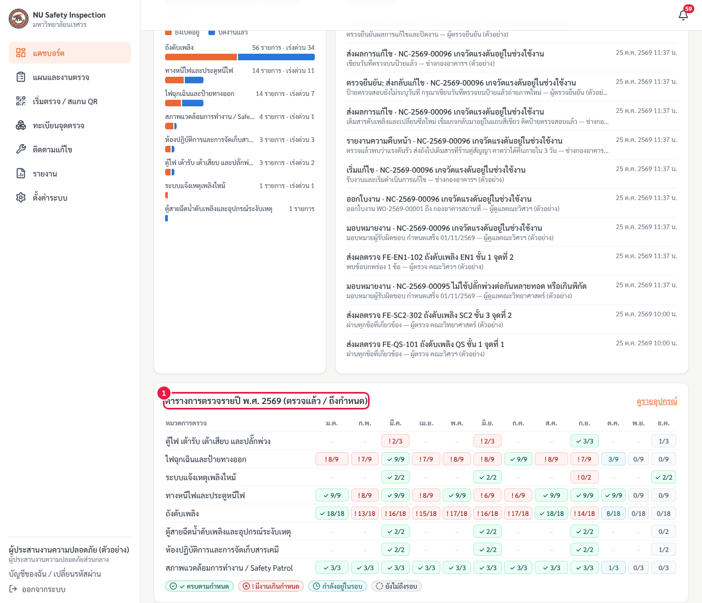
- ตารางการตรวจรายปี พ.ศ. — แต่ละช่อง = ตรวจแล้ว / ถึงกำหนด ของเดือนนั้น แยกตามหมวด กดที่ช่องเพื่อดูรายการ หรือกด “ดูรายอุปกรณ์” เพื่อดูแยกทีละจุดตรวจ
| สัญลักษณ์ | ความหมาย |
|---|---|
| ✓ 3/3 | ตรวจครบตามกำหนดแล้ว |
| ! 7/9 | มีงานเกินกำหนด (ตรวจไม่ครบ) — ควรติดตาม |
| 5/9 | กำลังอยู่ในรอบ ยังไม่ครบกำหนด |
| 0/9 | ยังไม่ถึงรอบ |
| – | ไม่มีงานตรวจในเดือนนั้น |
6.3 ดาวน์โหลดรายงาน Excel และ PDF
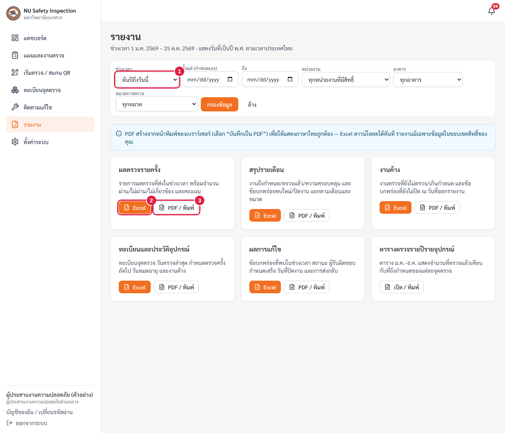
- ช่วงเวลา และตัวกรองอื่น — เลือกก่อนแล้วกด “กรองข้อมูล” รายงานทุกฉบับใช้ตัวกรองนี้
- Excel — ดาวน์โหลดไฟล์ .xlsx ทันที เปิดด้วย Microsoft Excel หรือ Google Sheets
- PDF / พิมพ์ — เปิดหน้าพิมพ์ แล้วกด “พิมพ์ / บันทึกเป็น PDF” → เลือก บันทึกเป็น PDF
| รายงาน | เนื้อหา |
|---|---|
| ผลตรวจรายครั้ง | ผลตรวจที่ส่งในช่วงเวลา จำนวนผ่าน/ไม่ผ่าน/ไม่เกี่ยวข้อง และคะแนน |
| สรุปรายเดือน | งานถึงกำหนด ตรวจแล้ว ความครอบคลุม ข้อบกพร่องพบใหม่/ปิดงาน แยกเดือนและหมวด — เหมาะสำหรับรายงานคณะกรรมการ |
| งานค้าง | งานตรวจที่ยังไม่ตรวจ/เกินกำหนด และข้อบกพร่องที่ยังไม่ปิด ณ วันที่ออกรายงาน |
| ทะเบียนและประวัติอุปกรณ์ | ทะเบียนจุดตรวจ วันตรวจล่าสุด กำหนดครั้งถัดไป วันหมดอายุ |
| ผลการแก้ไข | ข้อบกพร่องที่พบในช่วงเวลา ผู้รับผิดชอบ กำหนดเสร็จ วันที่ปิด และจำนวนครั้งที่ส่งกลับ |
| ตารางตรวจรายปีรายอุปกรณ์ | ตาราง ม.ค.–ธ.ค. แยกทีละจุดตรวจ |
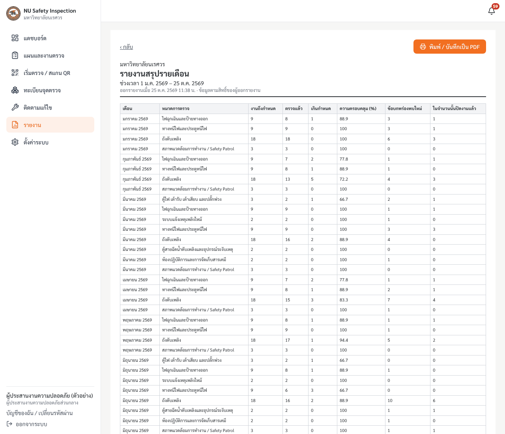
การใช้งานสำหรับผู้ดูแลระบบ
การตั้งค่าครั้งแรก · หน่วยงาน · อาคาร · ผู้ใช้และสิทธิ์ · แบบตรวจ · การแจ้งเตือน · การดูแลระบบประจำ
ส่วนนี้เขียนสำหรับผู้ดูแลระบบที่ ไม่มีพื้นฐานด้านไอที งานประจำวันทั้งหมดทำผ่านเมนู ตั้งค่าระบบ ในเว็บไซต์ ไม่ต้องเขียนโปรแกรม ส่วนบริการเบื้องหลัง (หัวข้อ 7.9) แทบไม่ต้องเข้าไปแตะ ยกเว้นเมื่อเกิดปัญหา
7.1 รายการตรวจสอบการตั้งค่าครั้งแรก
ทำตามลำดับ ติ๊ก ☐ เมื่อทำเสร็จ
ก. เตรียมโครงสร้าง
- เข้าสู่ระบบด้วยบัญชี @nu.ac.th ของผู้ดูแลระบบ (บัญชีแรกตั้งโดยผู้ติดตั้งระบบ)
- ตรวจหน้า ภาพลักษณ์: ชื่อระบบ ชื่อมหาวิทยาลัย โดเมนอีเมล
nu.ac.th(7.8) - เพิ่ม หน่วยงาน: คณะ กอง ศูนย์ (7.3)
- เพิ่ม อาคาร ชั้น ห้อง (7.3)
- ตรวจทาน แบบตรวจ ร่วมกับผู้เชี่ยวชาญ (7.5)
ข. เตรียมคนและงาน
- แจ้งบุคลากรให้เข้าสู่ระบบด้วย Google ครั้งแรก แล้ว กำหนดบทบาท (7.4) หรือลงทะเบียนอีเมลล่วงหน้า
- ให้ผู้ดูแลคณะลงทะเบียน จุดตรวจ และ พิมพ์ป้าย QR (3.1–3.3)
- สร้าง แผนการตรวจ และ มอบหมายผู้ตรวจ (3.4–3.5)
- ตั้งค่า การแจ้งเตือน (7.6)
- ทดลองตรวจ 1 จุดจนปิดงานครบวงจร (ส่วนที่ 2–5)
7.2 เมนูตั้งค่าระบบ
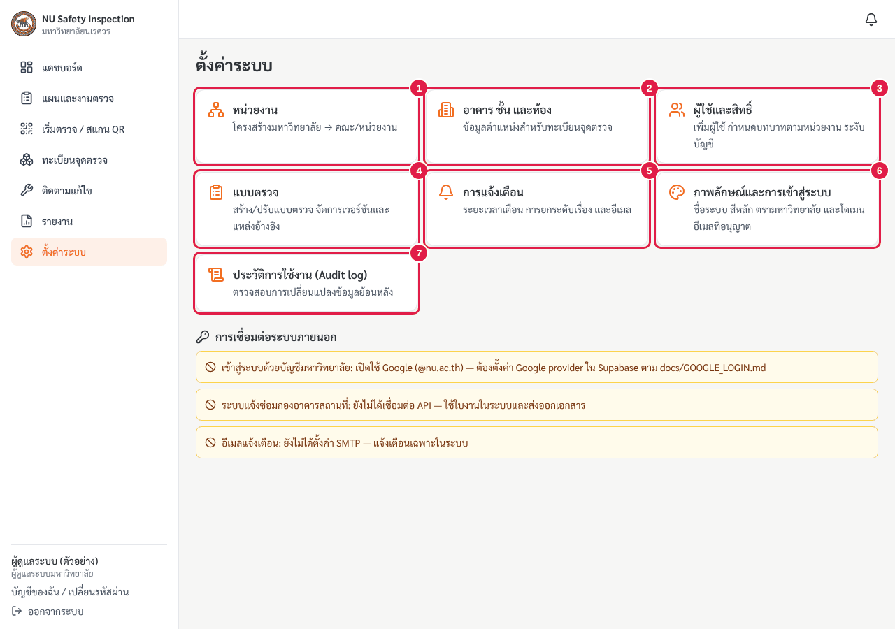
- หน่วยงาน — โครงสร้างมหาวิทยาลัย → คณะ/หน่วยงาน (เฉพาะผู้ดูแลระบบ)
- อาคาร ชั้น และห้อง — ข้อมูลตำแหน่งสำหรับทะเบียนจุดตรวจ
- ผู้ใช้และสิทธิ์ — เพิ่มผู้ใช้ กำหนดบทบาทตามหน่วยงาน ระงับบัญชี
- แบบตรวจ — สร้าง/ปรับแบบตรวจ จัดการเวอร์ชัน และแหล่งอ้างอิง
- การแจ้งเตือน — ระยะเวลาเตือน การยกระดับเรื่อง และอีเมล
- ภาพลักษณ์และการเข้าสู่ระบบ — ชื่อระบบ สี ตรามหาวิทยาลัย โดเมนอีเมลที่อนุญาต
- ประวัติการใช้งาน (Audit log) — ตรวจสอบการเปลี่ยนแปลงข้อมูลย้อนหลัง
กล่องสีเหลือง “การเชื่อมต่อระบบภายนอก” ด้านล่างบอกสถานะ เช่น ยังไม่ได้ตั้งค่าอีเมล (SMTP) — เป็นข้อมูลแจ้งให้ทราบ ไม่ใช่ข้อผิดพลาด
7.3 หน่วยงาน และ อาคาร ชั้น ห้อง
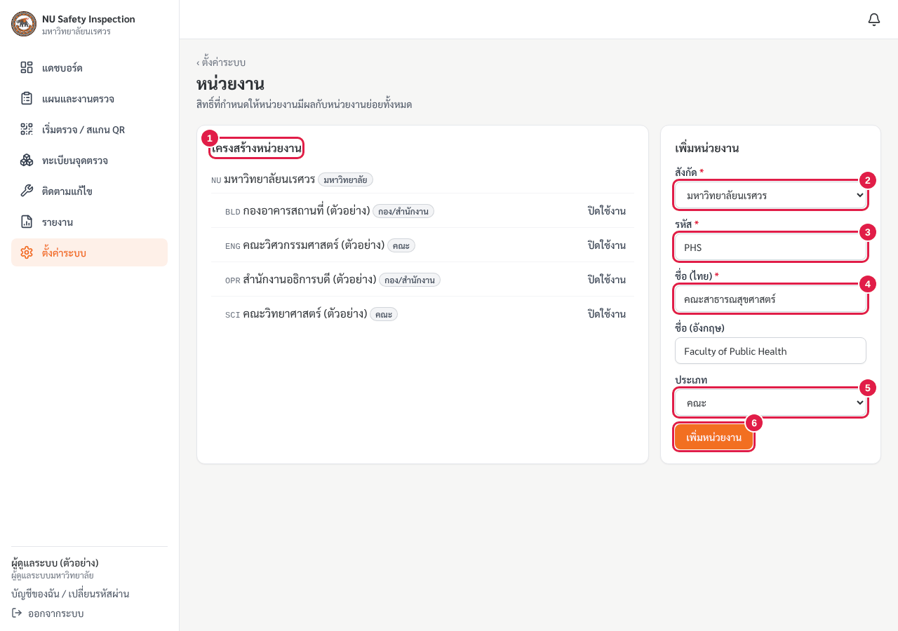
- โครงสร้างหน่วยงาน — แสดงแบบลำดับชั้น (มหาวิทยาลัย → คณะ/กอง → ภาควิชา) กด “ปิดใช้งาน” เมื่อยุบหน่วยงาน (ไม่ลบเพื่อเก็บประวัติ)
- สังกัด — หน่วยงานแม่ เช่น ภาควิชาสังกัดคณะ
- รหัส — ตัวย่อภาษาอังกฤษ เช่น
PHS - ชื่อ (ไทย) และชื่อภาษาอังกฤษ
- ประเภท — มหาวิทยาลัย / คณะ / กอง-สำนักงาน / ภาควิชา ฯลฯ
- กด เพิ่มหน่วยงาน
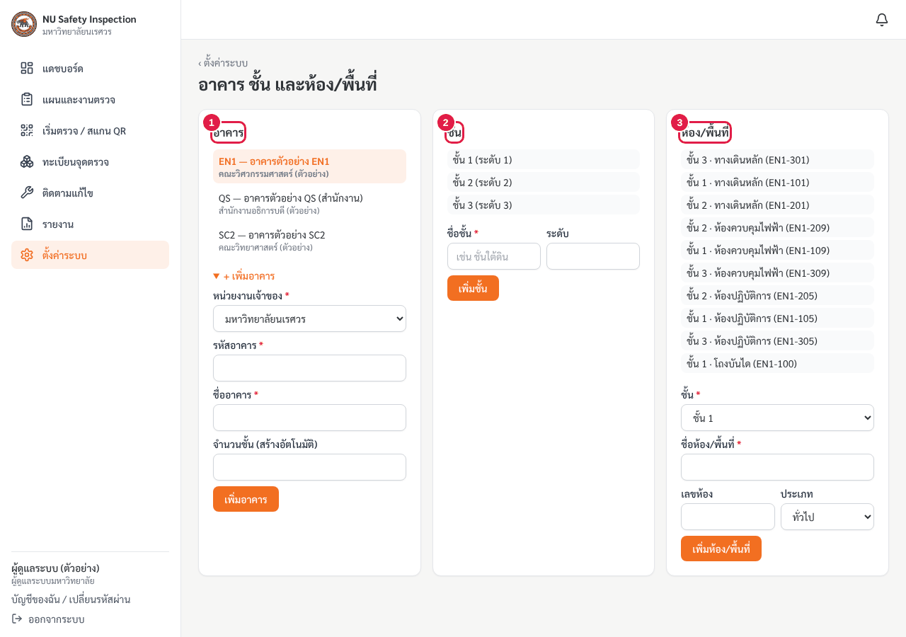
- อาคาร — กดชื่ออาคารเพื่อเลือก กด “+ เพิ่มอาคาร” เพื่อเพิ่ม: หน่วยงานเจ้าของ รหัสอาคาร ชื่ออาคาร และ จำนวนชั้น (ระบบสร้างชั้นให้อัตโนมัติ)
- ชั้น — ชั้นของอาคารที่เลือก เพิ่มชั้นพิเศษได้ เช่น ชั้นใต้ดิน ดาดฟ้า
- ห้อง/พื้นที่ — เลือกชั้น ใส่ชื่อห้อง เลขห้อง และประเภท (ทั่วไป ห้องปฏิบัติการ ฯลฯ)
7.4 ผู้ใช้และสิทธิ์
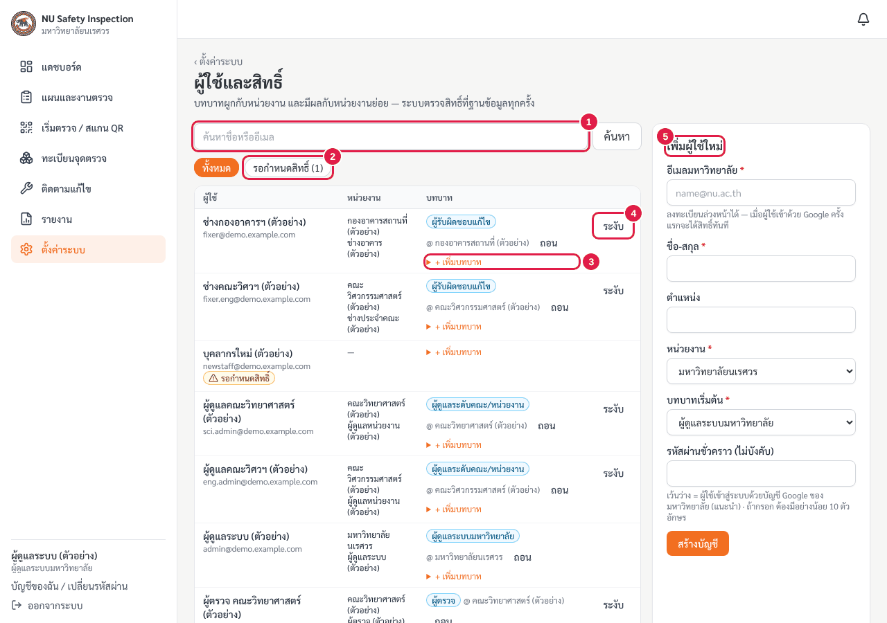
- ค้นหา ชื่อหรืออีเมล
- รอกำหนดสิทธิ์ (จำนวน) — ผู้ใช้ที่เข้าสู่ระบบด้วย Google แล้วแต่ยังไม่มีบทบาท ระบบแจ้งเตือนผู้ดูแลเมื่อมีคนใหม่ ควรตรวจทุกวันทำการ
- + เพิ่มบทบาท — กำหนดบทบาทเพิ่มให้ผู้ใช้ · ปุ่ม “ถอน” ข้างบทบาท ใช้ยกเลิกบทบาทนั้น
- ระงับ — ปิดการใช้งานบัญชีของผู้ที่ย้ายงาน/ลาออก (ใช้แทนการลบ เพื่อรักษาประวัติ)
- เพิ่มผู้ใช้ใหม่ — ลงทะเบียนอีเมล @nu.ac.th ล่วงหน้าพร้อมหน่วยงานและบทบาทเริ่มต้น เมื่อคนนั้นเข้าสู่ระบบด้วย Google ครั้งแรกจะได้สิทธิ์ทันที (เว้นช่องรหัสผ่านว่างไว้)
กำหนดบทบาทให้ผู้ใช้ใหม่ (สิ่งที่ทำบ่อยที่สุด)
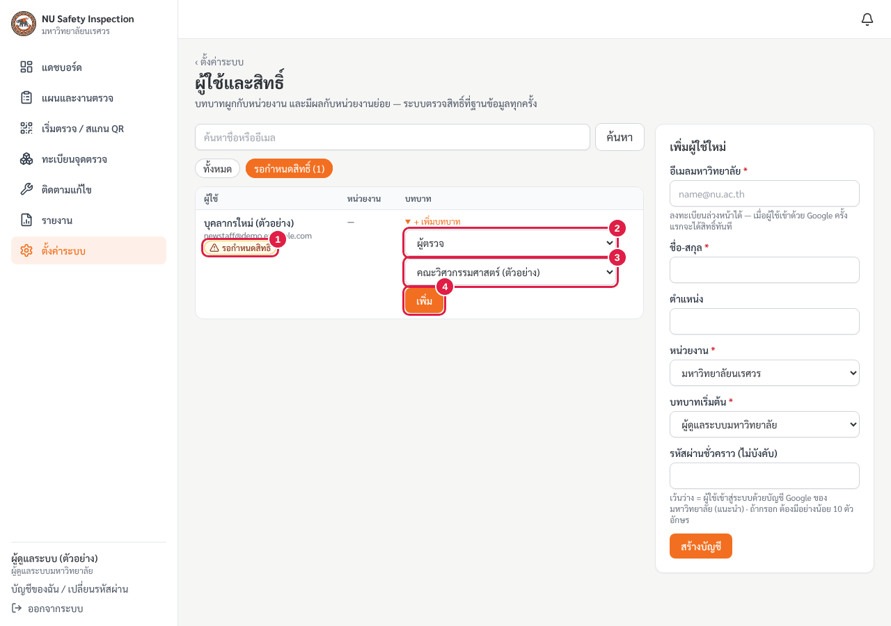
- ผู้ใช้ที่มีป้าย รอกำหนดสิทธิ์ — กด “+ เพิ่มบทบาท” ในแถวนั้น
- เลือก บทบาท เช่น ผู้ตรวจ
- เลือก หน่วยงาน ที่บทบาทนี้มีผล (ครอบคลุมหน่วยงานย่อย)
- กด เพิ่ม — แจ้งให้ผู้ใช้กดรีเฟรชหน้าจอ
- ให้สิทธิ์ น้อยที่สุดเท่าที่จำเป็น และที่ หน่วยงานเล็กที่สุด ที่ครอบคลุมงาน
- บทบาท “ผู้ดูแลระบบมหาวิทยาลัย” ให้เฉพาะผู้ที่ดูแลระบบจริง 1–2 คน
- ผู้ดูแลคณะกำหนดบทบาทได้เฉพาะในคณะตน และให้บทบาทระดับส่วนกลาง (ผู้ดูแลระบบ/ผู้ประสานงานส่วนกลาง) ไม่ได้
- ทุกการให้/ถอนสิทธิ์ถูกบันทึกในประวัติการใช้งาน
7.5 แบบตรวจและเวอร์ชัน
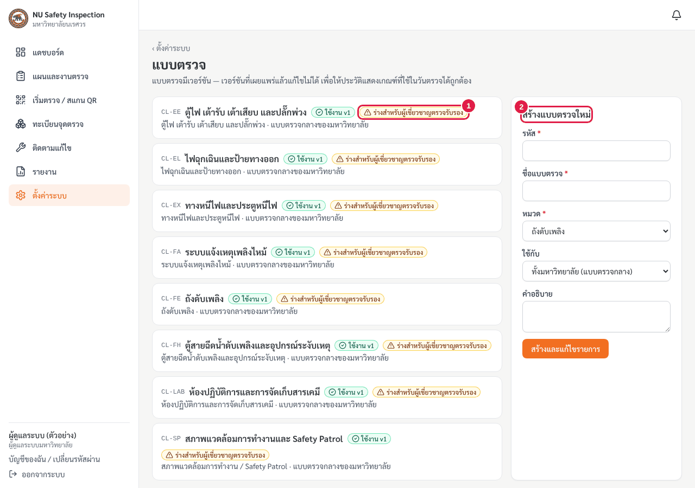
- ร่างสำหรับผู้เชี่ยวชาญตรวจรับรอง — แบบตรวจตัวอย่างทุกฉบับมีป้ายนี้ จนกว่าผู้เชี่ยวชาญจะตรวจรับรองและระบุแหล่งอ้างอิง
- สร้างแบบตรวจใหม่ — รหัส ชื่อ หมวด ใช้กับ (ทั้งมหาวิทยาลัย หรือเฉพาะหน่วยงาน) แล้วกด “สร้างและแก้ไขรายการ”
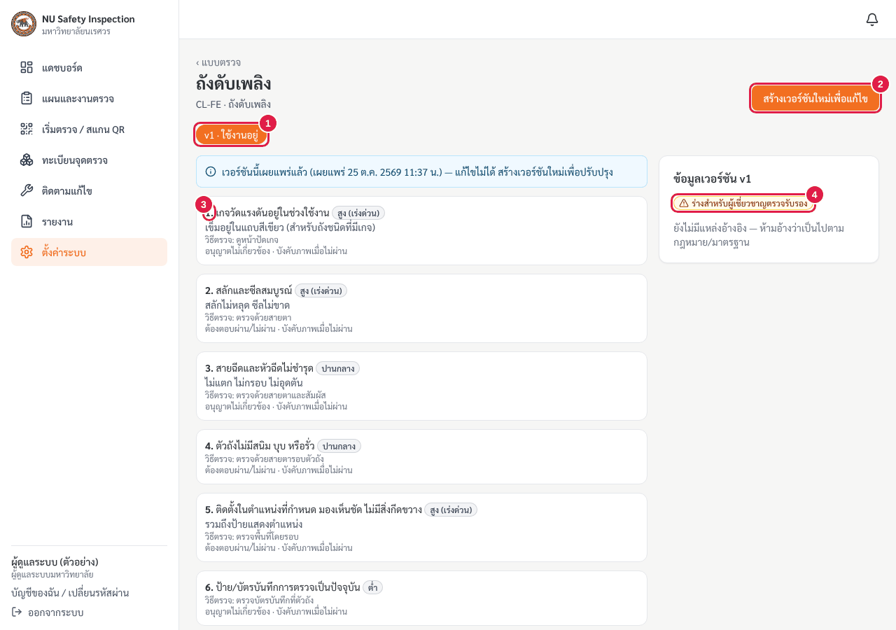
- เวอร์ชันและสถานะ — เช่น “v1 · ใช้งานอยู่”
- สร้างเวอร์ชันใหม่เพื่อแก้ไข — เวอร์ชันที่เผยแพร่แล้ว แก้ไขไม่ได้ ต้องสร้างเวอร์ชันใหม่ ระบบคัดลอกหัวข้อเดิมให้
- หัวข้อการตรวจ — แต่ละข้อมี หัวข้อ คำอธิบาย/เกณฑ์ วิธีตรวจ ระดับความสำคัญ อนุญาต “ไม่เกี่ยวข้อง” หรือไม่ และบังคับแนบภาพเมื่อไม่ผ่านหรือไม่
- ข้อมูลเวอร์ชัน — สถานะร่าง/รับรอง และแหล่งอ้างอิง
ขั้นตอนปรับปรุงแบบตรวจ
- กด สร้างเวอร์ชันใหม่เพื่อแก้ไข → แก้ไข/เพิ่ม/ลบหัวข้อ
- ถ้าต้องการอ้างอิงกฎหมาย/มาตรฐาน ให้ระบุ แหล่ง ฉบับ และวันที่ตรวจสอบ ให้ครบทุกช่อง
- การยกเลิกสถานะ “ร่าง” ต้องระบุ ผู้เชี่ยวชาญที่รับรอง (ระบบบังคับ)
- กรอก “บันทึกการเปลี่ยนแปลง” แล้วกด เผยแพร่เวอร์ชันนี้ — การตรวจใหม่ใช้เวอร์ชันนี้ ผลตรวจเดิมยังแสดงเกณฑ์ของเวอร์ชันที่ใช้ในวันตรวจ
7.6 การแจ้งเตือน
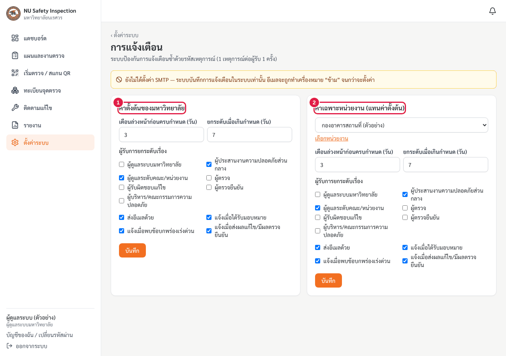
- ค่าตั้งต้นของมหาวิทยาลัย — ใช้กับทุกหน่วยงาน
- เตือนล่วงหน้าก่อนครบกำหนด (วัน) — ค่าเริ่มต้น 3 วัน
- ยกระดับเมื่อเกินกำหนด (วัน) — เกินกำหนดกี่วันจึงแจ้งผู้บังคับบัญชา ค่าเริ่มต้น 7 วัน
- ผู้รับการยกระดับเรื่อง — ติ๊กบทบาทที่จะได้รับแจ้ง
- ส่งอีเมลด้วย และประเภทการแจ้งที่เปิด/ปิด
- ค่าเฉพาะหน่วยงาน — เลือกหน่วยงานแล้วกำหนดค่าแทนค่าตั้งต้น เช่น หน่วยงานที่มีความเสี่ยงสูงให้เตือนเร็วขึ้น
docs/DEPLOY_GUIDE.md)7.7 ประวัติการใช้งาน (Audit log)
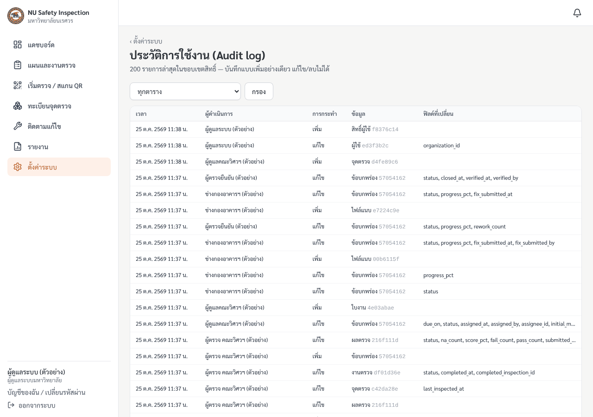
ทุกการเพิ่ม/แก้ไข/ลบข้อมูลสำคัญถูกบันทึกอัตโนมัติ: ใครทำ เวลาใด ตารางใด และฟิลด์ใดเปลี่ยนจากค่าใดเป็นค่าใด ประวัตินี้แก้ไขหรือลบไม่ได้ ใช้ตรวจสอบเมื่อมีข้อสงสัย เช่น ใครเปลี่ยนสถานะอุปกรณ์ หรือใครให้สิทธิ์ผู้ใช้
7.8 ภาพลักษณ์และการเข้าสู่ระบบ
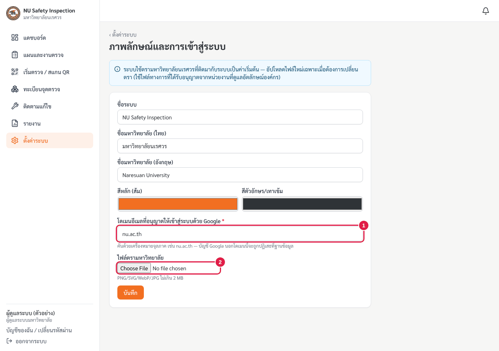
- โดเมนอีเมลที่อนุญาตให้เข้าสู่ระบบด้วย Google — ค่าปัจจุบัน
nu.ac.thบัญชี Google นอกโดเมนนี้จะถูกปฏิเสธ อย่าแก้ไขค่านี้ หากไม่แน่ใจ - ไฟล์ตรามหาวิทยาลัย — ระบบใช้ตรามหาวิทยาลัยนเรศวรเป็นค่าเริ่มต้นแล้ว อัปโหลดใหม่เฉพาะเมื่อต้องการเปลี่ยน (PNG/SVG/WebP/JPG ไม่เกิน 2 MB)
7.9 บริการเบื้องหลังของระบบ (สำหรับรู้ไว้)
ระบบทำงานบนบริการออนไลน์ 4 แห่ง ผู้ดูแลระบบควรรู้ว่าแต่ละแห่งทำหน้าที่อะไร และ เก็บรหัสผ่านเข้าบริการเหล่านี้ไว้อย่างปลอดภัย
| บริการ | หน้าที่ | เข้าไปเมื่อใด |
|---|---|---|
| Vercel | ที่ตั้งเว็บไซต์ (หน้าจอที่ผู้ใช้เปิด) | เว็บเปิดไม่ได้ · ต้องเพิ่มค่าตั้งค่า เช่น SMTP · ดูว่าระบบอัปเดตเวอร์ชันใหม่สำเร็จหรือไม่ (เมนู Deployments) |
| Supabase | ฐานข้อมูล การเข้าสู่ระบบ และไฟล์ภาพทั้งหมด | ตั้งผู้ดูแลระบบคนแรก · โครงการถูกพักการใช้งาน · ตั้งค่าการเข้าสู่ระบบด้วย Google |
| Google Cloud | รหัสสำหรับปุ่ม “เข้าสู่ระบบด้วย Google” | แทบไม่ต้องเข้า ยกเว้นปุ่ม Google ใช้งานไม่ได้ |
| GitHub | เก็บโค้ดโปรแกรม (ต้นฉบับของระบบ) | เมื่อผู้พัฒนาปรับปรุงระบบ — ควรตั้งเป็น Private |
หน้าตรวจความพร้อมของระบบ
เปิด https://ลิงก์ของระบบ/setup-check ได้โดยไม่ต้องเข้าสู่ระบบ หน้านี้ตรวจการตั้งค่าที่จำเป็นทั้งหมด (โดยไม่แสดงค่าลับ) แต่ละแถวมีเครื่องหมายถูก/กากบาท พร้อมคำแนะนำวิธีแก้ เมื่อระบบมีปัญหา ให้เปิดหน้านี้เป็นอย่างแรก
7.10 งานดูแลระบบประจำ
| ความถี่ | สิ่งที่ควรทำ |
|---|---|
| ทุกวันทำการ | ตรวจ “รอกำหนดสิทธิ์” ในหน้าผู้ใช้ · ดูกระดิ่งแจ้งเตือน · ดูแถบ “รอมอบหมาย” และ “เร่งด่วน” ในติดตามแก้ไข |
| ทุกสัปดาห์ | ดูแดชบอร์ด: งานตรวจเกินกำหนด งานแก้ไขเกินกำหนด · ติดตามผู้เกี่ยวข้อง |
| ทุกเดือน | ดาวน์โหลด รายงาน Excel ทุกฉบับเก็บไว้เป็นสำเนา (ในไดรฟ์ของหน่วยงาน) · ดูตัวกรอง “ใกล้หมดอายุ (60 วัน)” ในทะเบียนจุดตรวจ · ระงับบัญชีผู้ที่ย้าย/ลาออก |
| ทุกปี (ธ.ค.) | ตรวจว่าแผนการตรวจปีหน้าสร้างงานแล้ว (กด “สร้างงานถึงสิ้นปี” ตอนต้นปี) · ทบทวนแบบตรวจร่วมกับผู้เชี่ยวชาญ · ทบทวนรายชื่อผู้มีสิทธิ์ |
7.11 แก้ปัญหาที่พบบ่อย
| อาการ | สาเหตุที่เป็นไปได้ / วิธีแก้ |
|---|---|
| ผู้ใช้เข้าสู่ระบบแล้วขึ้น “ยังไม่ได้รับบทบาท” | ปกติสำหรับผู้ใช้ใหม่ → กำหนดบทบาทตามหัวข้อ 7.4 แล้วให้ผู้ใช้รีเฟรช |
| ขึ้น “ระบบนี้สำหรับบุคลากรเท่านั้น” | ผู้ใช้เลือกบัญชี Google ส่วนตัว → ให้กดเข้าสู่ระบบใหม่และเลือกบัญชี @nu.ac.th |
| ขึ้น “เข้าสู่ระบบด้วยบัญชีมหาวิทยาลัยไม่สำเร็จ” พร้อม “รายละเอียด: …” | จดข้อความในบรรทัด “รายละเอียด” ส่งให้ผู้ติดตั้งระบบ · ถ้าเป็น PKCE code verifier not found ให้ปิดแท็บแล้วเปิดหน้าเข้าสู่ระบบใหม่ กดปุ่ม Google ครั้งเดียว · ถ้าเป็น Unable to exchange external code แปลว่า Client ID/Secret ของ Google ใน Supabase ไม่ตรงกับใน Google Cloud |
กด Google แล้วไปหน้า localhost หรือเว็บเก่า | Supabase → Authentication → URL Configuration: ตั้ง Site URL เป็นลิงก์จริงของระบบ และเพิ่ม Redirect URLs เป็น https://ลิงก์ของระบบ/** |
| เว็บขึ้นหน้าตรวจการตั้งค่า หรือ Error 500 | เปิด /setup-check ดูแถวที่เป็นกากบาท แก้ค่าใน Vercel → Settings → Environment Variables แล้ว Redeploy |
| ทั้งระบบเปิดไม่ได้หลังไม่มีคนใช้นาน | โครงการ Supabase แผนฟรีอาจถูก พักชั่วคราว เมื่อไม่มีการใช้งานต่อเนื่อง → เข้า Supabase แล้วกด Restore project |
| ไม่ได้รับอีเมลแจ้งเตือน | ยังไม่ได้ตั้งค่า SMTP (ดู 7.6) หรือปิด “ส่งอีเมลด้วย” · การแจ้งเตือนในระบบยังทำงานปกติ |
| สแกน QR แล้วกล้องไม่เปิด | เบราว์เซอร์ไม่ได้รับอนุญาตใช้กล้อง → เปิดสิทธิ์กล้องในการตั้งค่าเบราว์เซอร์ หรือพิมพ์รหัสจุดตรวจแทน |
| สแกนแล้วขึ้น “ไม่มีสิทธิ์” | ผู้ตรวจไม่มีบทบาทในหน่วยงานเจ้าของจุดตรวจ → เพิ่มบทบาทผู้ตรวจให้หน่วยงานนั้น |
| ไม่มีงานตรวจขึ้นสำหรับอุปกรณ์ใหม่ | อุปกรณ์เพิ่มหลังสร้างแผน → หน้าแผนการตรวจ กด “สร้างงานถึงสิ้นปี” |
ภาคผนวก
ก. สถานะของงานตรวจและข้อบกพร่อง
| สถานะงานตรวจ | ความหมาย |
|---|---|
| ยังไม่ถึงกำหนด | ยังไม่ถึงวันเริ่มรอบ |
| รอตรวจ | อยู่ในช่วงที่ต้องตรวจ ยังไม่เลยวันครบกำหนด |
| ตรวจแล้ว | ส่งผลตรวจแล้ว (ถ้าส่งหลังวันครบกำหนดจะนับเป็น “ส่งช้า”) |
| เกินกำหนด | เลยวันครบกำหนดแล้วยังไม่ส่งผล |
| ยกเลิก | งานถูกยกเลิก เช่น อุปกรณ์จำหน่ายแล้ว (ไม่นับใน KPI) |
| สถานะข้อบกพร่อง | ความหมาย |
|---|---|
| พบข้อบกพร่อง (รอมอบหมาย) | สร้างจากผลตรวจ รอผู้ดูแลมอบหมายผู้รับผิดชอบ |
| มอบหมายแล้ว (รอแก้ไข) | มีผู้รับผิดชอบและกำหนดเสร็จแล้ว รอรับงาน |
| กำลังแก้ไข | ผู้รับผิดชอบรับงานแล้ว (หรือถูกส่งกลับแก้ไข) |
| รอตรวจยืนยัน | ส่งผลแก้ไขแล้ว รอผู้ตรวจยืนยัน |
| ปิดงาน | ผู้ตรวจยืนยันกด “ผ่าน — ปิดงาน” แล้ว |
ข. ระดับความเร่งด่วนของข้อบกพร่อง
| ระดับ | ใช้เมื่อ (แนวทาง) | ระบบดำเนินการ |
|---|---|---|
| ต่ำ | ไม่กระทบความปลอดภัยโดยตรง เช่น ป้ายบันทึกการตรวจไม่เป็นปัจจุบัน | แจ้งผู้ดูแลหน่วยงานตามปกติ |
| ปานกลาง | อาจลดประสิทธิภาพอุปกรณ์ ควรแก้ภายในรอบตรวจถัดไป | แจ้งผู้ดูแลหน่วยงานตามปกติ |
| สูง (เร่งด่วน) | อุปกรณ์อาจใช้งานไม่ได้เมื่อเกิดเหตุ เช่น ถังแรงดันต่ำ ไฟฉุกเฉินไม่ติด | แจ้งผู้ดูแลหน่วยงาน และผู้ประสานงานส่วนกลางทันที |
| วิกฤต (เร่งด่วนมาก) | เสี่ยงต่อชีวิตทันที เช่น ทางหนีไฟถูกล็อก/ปิดกั้น สายไฟชำรุดมีไฟรั่ว | แจ้งทันทีเหมือนระดับสูง — ควรมีมาตรการเบื้องต้นในวันเดียวกัน |
หมายเหตุ: แนวทางข้างต้นเป็นตัวอย่างประกอบการตัดสินใจ หน่วยงานควรกำหนดเกณฑ์ของตนร่วมกับผู้เชี่ยวชาญด้านความปลอดภัย
ค. การแจ้งเตือนที่ระบบส่ง
| เหตุการณ์ | ผู้รับ |
|---|---|
| ได้รับมอบหมายงานตรวจ | ผู้ตรวจที่ได้รับมอบหมาย |
| งานตรวจใกล้ครบกำหนด / เกินกำหนด | ผู้ตรวจ (วันละครั้ง ประมาณ 08.00 น.) |
| ยกระดับ: งานตรวจเกินกำหนด | บทบาทที่ตั้งไว้ในหน้าการแจ้งเตือน (ค่าเริ่มต้น: ผู้ดูแลหน่วยงาน และผู้ประสานงานส่วนกลาง) |
| พบข้อบกพร่องใหม่ รอมอบหมาย | ผู้ดูแลหน่วยงาน (ระดับสูง/วิกฤต แจ้งผู้ประสานงานส่วนกลางด้วย) |
| ได้รับมอบหมายงานแก้ไข | ผู้รับผิดชอบแก้ไข |
| งานแก้ไขใกล้ครบกำหนด / เกินกำหนด | ผู้รับผิดชอบแก้ไข |
| ยกระดับ: งานแก้ไขเกินกำหนด | บทบาทที่ตั้งไว้ในหน้าการแจ้งเตือน |
| มีผลการแก้ไขรอตรวจยืนยัน | ผู้ตรวจยืนยันของหน่วยงานนั้น |
| ผลการตรวจยืนยัน (ผ่าน/ส่งกลับ) | ผู้รับผิดชอบแก้ไข |
| ผู้ใช้ใหม่รอกำหนดสิทธิ์ | ผู้ดูแลระบบ และผู้ประสานงานส่วนกลาง |
ง. คำถามที่พบบ่อย
ใช้มือถือของตัวเองตรวจได้หรือไม่?
ได้ ใช้ได้ทั้ง Android และ iPhone ผ่านเบราว์เซอร์ ไม่ต้องติดตั้งแอป แนะนำให้ “เพิ่มลงในหน้าจอหลัก” (หัวข้อ 1.7)
ส่งผลตรวจผิด แก้ไขได้หรือไม่?
ผลตรวจที่ส่งแล้วแก้ไขไม่ได้ เพื่อความน่าเชื่อถือของข้อมูล ให้แจ้งผู้ดูแลหน่วยงาน ถ้าข้อบกพร่องที่เกิดจากการกดผิดไม่มีอยู่จริง ให้ดำเนินการตามขั้นตอนปกติ: ผู้ดูแลมอบหมายผู้รับผิดชอบ → ผู้รับผิดชอบตรวจซ้ำที่หน้างาน แนบภาพ และเขียนสรุปว่า “ตรวจซ้ำแล้วไม่พบข้อบกพร่อง (บันทึกผิดพลาด)” → ผู้ตรวจยืนยันปิดงาน ประวัติจะบันทึกเหตุผลไว้ครบถ้วน
ตรวจนอกรอบได้หรือไม่ เช่น หลังเกิดเหตุ?
ได้ สแกน QR แล้วกด “เริ่มตรวจ (นอกรอบ)” ผลตรวจถูกบันทึกในประวัติอุปกรณ์เช่นเดียวกัน
ทำไมคะแนนไม่นับข้อ “ไม่เกี่ยวข้อง”?
เพื่อไม่ให้อุปกรณ์ที่ไม่มีส่วนประกอบบางอย่างเสียคะแนน คะแนน = ผ่าน ÷ (ผ่าน + ไม่ผ่าน) × 100
ผู้แก้ไขกับผู้ตรวจยืนยันเป็นคนเดียวกันได้หรือไม่?
ไม่ได้ ระบบบังคับแยกหน้าที่ ผู้แก้ไขยืนยันงานของตนเองไม่ได้ หน่วยงานเล็กที่มีคนน้อยให้ผู้ดูแลหน่วยงานหรือผู้ประสานงานส่วนกลางเป็นผู้ตรวจยืนยัน
ข้อมูลภาพถ่ายเก็บที่ไหน ใครเห็นได้บ้าง?
เก็บในพื้นที่จัดเก็บแบบส่วนตัวของระบบ เปิดดูได้เฉพาะผู้ที่เข้าสู่ระบบและมีสิทธิ์ในหน่วยงานนั้น ลิงก์ภาพหมดอายุภายใน 10 นาที ส่งต่อให้บุคคลภายนอกเปิดไม่ได้
ป้าย QR ถูกถ่ายรูปไปโดยคนนอก ข้อมูลรั่วหรือไม่?
ไม่รั่ว QR มีเพียงรหัสอ้างอิงแบบสุ่ม ผู้สแกนต้องเข้าสู่ระบบด้วยบัญชี @nu.ac.th และมีสิทธิ์ในหน่วยงานนั้นจึงเห็นรายละเอียด
ระบบเชื่อมกับระบบแจ้งซ่อมของกองอาคารสถานที่หรือไม่?
ยังไม่เชื่อมต่อ ใบงานต้องพิมพ์/บันทึก PDF แล้วส่งด้วยตนเอง (หัวข้อ 3.7)
หมายเหตุ: ชื่อบุคคล อีเมล และข้อมูลในภาพและตัวอย่างทั้งหมดเป็นข้อมูลสมมติเพื่อประกอบคู่มือ